<title>M1 모듈 얼굴 기관</title>
<link rel="preconnect" href="https://fonts.googleapis.com">
<link rel="preconnect" href="https://fonts.gstatic.com" crossorigin>
<link rel="stylesheet" href="https://fonts.googleapis.com/css2?family=IBM+Plex+Mono:wght@400;500&family=IBM+Plex+Sans+KR:wght@400;500;600;700&display=swap">
<style>
/* Layout: one reading column; figures full width of the column */
:root{--bg:#F5F6F8;--paper:#fff;--ink:#1B1F27;--muted:#5B6473;--line:#DDE1E8;--soft:#EEF1F6;--accent:#2F5BD3;--good:#1E8A52;--bad:#C83A32;--warn:#B26A00;
--f-body:"IBM Plex Sans KR","Malgun Gothic",system-ui,sans-serif;--f-mono:"IBM Plex Mono",ui-monospace,Consolas,monospace}
@media (prefers-color-scheme: dark){:root:not([data-theme="light"]){--bg:#12151B;--paper:#191D25;--ink:#E5E8EE;--muted:#9BA4B3;--line:#2B313C;--soft:#20252F;--accent:#7FA2FF;--good:#5ACB8C;--bad:#FF6F66;--warn:#F0AE48;color-scheme:dark}}
:root[data-theme="dark"]{--bg:#12151B;--paper:#191D25;--ink:#E5E8EE;--muted:#9BA4B3;--line:#2B313C;--soft:#20252F;--accent:#7FA2FF;--good:#5ACB8C;--bad:#FF6F66;--warn:#F0AE48;color-scheme:dark}
*{box-sizing:border-box}
body{background:var(--bg);color:var(--ink);font-family:var(--f-body);font-size:16px;line-height:1.7}
main{max-width:920px;margin:0 auto;padding-inline:16px;padding-block:26px 60px}
h1{font-size:clamp(25px,4vw,33px);margin:0;line-height:1.25;text-wrap:balance}
.sub{color:var(--muted);margin:6px 0 0}
h2{font-size:21px;margin:38px 0 6px;text-wrap:balance}
h3{font-size:17px;margin:20px 0 4px}
p,ul,ol{max-width:72ch} li{margin:3px 0}
figure{margin:16px 0;background:var(--paper);border:1px solid var(--line);border-radius:12px;padding:12px}
figure img{display:block;width:100%;height:auto;border-radius:6px;background:#2a2a2e}
figure img.narrow{max-width:560px;margin:0 auto}
figure svg{display:block;width:100%;height:auto}
figcaption{font-size:14px;color:var(--muted);margin-top:8px}
figcaption b{color:var(--ink)}
.tbl{overflow-x:auto;margin:12px 0}
table{border-collapse:collapse;font-size:14.5px;min-width:540px;width:100%;background:var(--paper)}
th,td{border:1px solid var(--line);padding:6px 10px;text-align:left;vertical-align:top}
th{background:var(--soft)}
td.num{font-family:var(--f-mono);font-variant-numeric:tabular-nums;white-space:nowrap}
.good{color:var(--good);font-weight:600}.bad{color:var(--bad);font-weight:600}.warn{color:var(--warn);font-weight:600}
.box{background:var(--paper);border:1px solid var(--line);border-left:4px solid var(--accent);border-radius:0 10px 10px 0;padding:12px 16px;margin:14px 0}
code{font-family:var(--f-mono);font-size:13.5px;background:var(--soft);padding:1px 5px;border-radius:4px;overflow-wrap:anywhere}
svg text{font-family:var(--f-body)}
.s-ink{fill:var(--ink)}.s-muted{fill:var(--muted)}.s-paper{fill:var(--paper)}.s-soft{fill:var(--soft)}.s-acc{fill:var(--accent)}.s-good{fill:var(--good)}.s-bad{fill:var(--bad)}
.st-acc{stroke:var(--accent)}.st-good{stroke:var(--good)}.st-ink{stroke:var(--ink)}.st-muted{stroke:var(--muted)}.st-bad{stroke:var(--bad)}
</style>
<style>
.chip{display:inline-block;font-size:12.5px;font-weight:600;padding:1px 8px;border-radius:999px;border:1px solid var(--line);background:var(--soft);white-space:nowrap}
.chip.ok{color:var(--good)}.chip.part{color:var(--warn)}.chip.no{color:var(--bad)}.chip.todo{color:var(--muted)}
.svgwrap{overflow-x:auto}
.svgwrap svg{min-width:640px}
</style>
<main>
<h1>M1 · 모듈형 얼굴 기관 (눈·입 부품을 끼운 얼굴)</h1>
<p class="sub">2026-10-12 · 실사 f02 · 반실사 f06 · 카툰 f11 · 애니 f09 · Tripo 크레딧 360 사용 (지운 머리·부품 180 + 눈 부품 나눔 180, 잔액 22,165)</p>

<div class="box"><b>지금 상태</b>
<ul>
<li><b>기본 방식은 "겹침생성 + 좌우 완전 대칭"입니다.</b> 이목구비가 있는 원본 머리를 좌우 평균으로 대칭화하고, 그 위에 원본 표면 모양 그대로의 고리 눈·입 부품을 덧씌운 뒤 겹친 원본 면을 지웁니다(4c·4d).</li>
<li><b>4개 스타일 전체 체인 성공</b>: 입(입술 안쪽 말림·입속)·눈·이·혀 → Rigify → 표정 42개 + 눈 감기 → 4방향 3K 텍스처 → 눈꺼풀 색. 바탕·부품·뼈·무게·표정이 모두 좌우 차이 0입니다(4f, 그림 26).</li>
<li><b>리그 안쪽을 그림으로 확인</b>: 뼈 94개 위치, 부위별 뼈 무게, 입·눈 단면(4g, 그림 28~31). 이를 보고 턱 회전축이 눈 높이 앞쪽에 있던 문제를 찾아 턱관절로 고쳤습니다.</li>
<li><b>이번에 고친 오류 6가지</b>: 대칭 반쪽 면 방향, 가운데 선 찌꺼기 면, 대칭 메쉬 자동 무게 실패, 턱 방향 판정, 아랫입술 조절점 붙이기, 턱 회전축.</li>
<li><b>남은 문제</b>: f02 감은 눈꺼풀 접힘 0.19mm 파고듦, 피부에 묻은 혀 뼈 무게, 안구 리그 연결, f09 Tripo 눈 부품 실패(4g-2, 5절).</li>
</ul></div>

<h2>1. 지금 가장 최신 흐름</h2>
<figure><div class="svgwrap"><svg viewBox="0 0 860 300" role="img" aria-label="겹침생성 대칭 체인"><defs><marker id="ar2" viewBox="0 0 10 10" refX="9" refY="5" markerWidth="7" markerHeight="7" orient="auto"><path d="M0,0 L10,5 L0,10 z" class="s-muted"/></marker></defs><g font-size="12"><text x="10" y="18" class="s-muted" font-weight="600">① 머리·부품 (chain_sym2.sh)</text><rect x="10" y="24" width="128" height="52" rx="8" class="s-paper st-good" stroke-width="1.5"/><text x="74" y="46" text-anchor="middle" class="s-ink" font-weight="600">원본 머리</text><text x="74" y="64" text-anchor="middle" class="s-muted" font-size="10.5">T14 정렬</text><path d="M138 50 H150" class="st-muted" stroke-width="1.5" marker-end="url(#ar2)" fill="none"/><rect x="152" y="24" width="128" height="52" rx="8" class="s-paper st-good" stroke-width="1.5"/><text x="216" y="46" text-anchor="middle" class="s-ink" font-weight="600">좌우 완전 대칭</text><text x="216" y="64" text-anchor="middle" class="s-muted" font-size="10.5">sym_mirror</text><path d="M280 50 H292" class="st-muted" stroke-width="1.5" marker-end="url(#ar2)" fill="none"/><rect x="294" y="24" width="128" height="52" rx="8" class="s-paper st-good" stroke-width="1.5"/><text x="358" y="46" text-anchor="middle" class="s-ink" font-weight="600">입 부품</text><text x="358" y="64" text-anchor="middle" class="s-muted" font-size="10.5">organ_mouth</text><path d="M422 50 H434" class="st-muted" stroke-width="1.5" marker-end="url(#ar2)" fill="none"/><rect x="436" y="24" width="128" height="52" rx="8" class="s-paper st-good" stroke-width="1.5"/><text x="500" y="46" text-anchor="middle" class="s-ink" font-weight="600">눈 부품</text><text x="500" y="64" text-anchor="middle" class="s-muted" font-size="10.5">organ_eye</text><path d="M564 50 H576" class="st-muted" stroke-width="1.5" marker-end="url(#ar2)" fill="none"/><rect x="578" y="24" width="128" height="52" rx="8" class="s-paper st-good" stroke-width="1.5"/><text x="642" y="46" text-anchor="middle" class="s-ink" font-weight="600">이·혀</text><text x="642" y="64" text-anchor="middle" class="s-muted" font-size="10.5">organ_teeth</text><path d="M706 50 H718" class="st-muted" stroke-width="1.5" marker-end="url(#ar2)" fill="none"/><rect x="720" y="24" width="128" height="52" rx="8" class="s-paper st-good" stroke-width="1.5"/><text x="784" y="46" text-anchor="middle" class="s-ink" font-weight="600">대칭 고정 (점)</text><text x="784" y="64" text-anchor="middle" class="s-muted" font-size="10.5">sym_lock mesh</text><path d="M784 76 V90 H74 V110" class="st-muted" stroke-width="1.5" fill="none" marker-end="url(#ar2)"/><text x="10" y="114" class="s-muted" font-weight="600">② 리그·표정</text><rect x="10" y="120" width="128" height="52" rx="8" class="s-paper st-good" stroke-width="1.5"/><text x="74" y="142" text-anchor="middle" class="s-ink" font-weight="600">Rigify 맞춤</text><text x="74" y="160" text-anchor="middle" class="s-muted" font-size="10.5">rigify_fit · 턱관절</text><path d="M138 146 H150" class="st-muted" stroke-width="1.5" marker-end="url(#ar2)" fill="none"/><rect x="152" y="120" width="128" height="52" rx="8" class="s-paper st-good" stroke-width="1.5"/><text x="216" y="142" text-anchor="middle" class="s-ink" font-weight="600">입 안쪽 무게</text><text x="216" y="160" text-anchor="middle" class="s-muted" font-size="10.5">organ_mouth_weights</text><path d="M280 146 H292" class="st-muted" stroke-width="1.5" marker-end="url(#ar2)" fill="none"/><rect x="294" y="120" width="128" height="52" rx="8" class="s-paper st-good" stroke-width="1.5"/><text x="358" y="142" text-anchor="middle" class="s-ink" font-weight="600">대칭 고정 (무게)</text><text x="358" y="160" text-anchor="middle" class="s-muted" font-size="10.5">sym_lock weights</text><path d="M422 146 H434" class="st-muted" stroke-width="1.5" marker-end="url(#ar2)" fill="none"/><rect x="436" y="120" width="128" height="52" rx="8" class="s-paper st-good" stroke-width="1.5"/><text x="500" y="142" text-anchor="middle" class="s-ink" font-weight="600">표정 42개</text><text x="500" y="160" text-anchor="middle" class="s-muted" font-size="10.5">rigify_bake</text><path d="M564 146 H576" class="st-muted" stroke-width="1.5" marker-end="url(#ar2)" fill="none"/><rect x="578" y="120" width="128" height="52" rx="8" class="s-paper st-good" stroke-width="1.5"/><text x="642" y="142" text-anchor="middle" class="s-ink" font-weight="600">눈 감기 2개</text><text x="642" y="160" text-anchor="middle" class="s-muted" font-size="10.5">organ_blink_keys</text><path d="M706 146 H718" class="st-muted" stroke-width="1.5" marker-end="url(#ar2)" fill="none"/><rect x="720" y="120" width="128" height="52" rx="8" class="s-paper st-good" stroke-width="1.5"/><text x="784" y="142" text-anchor="middle" class="s-ink" font-weight="600">대칭 고정 (표정)</text><text x="784" y="160" text-anchor="middle" class="s-muted" font-size="10.5">sym_lock keys</text><path d="M784 172 V186 H74 V206" class="st-muted" stroke-width="1.5" fill="none" marker-end="url(#ar2)"/><text x="10" y="210" class="s-muted" font-weight="600">③ 색·점검 (tex_sym2.sh, rig_viz)</text><rect x="10" y="216" width="128" height="52" rx="8" class="s-paper st-good" stroke-width="1.5"/><text x="74" y="238" text-anchor="middle" class="s-ink" font-weight="600">4방향 3K 텍스처</text><text x="74" y="256" text-anchor="middle" class="s-muted" font-size="10.5">project_texture</text><path d="M138 242 H150" class="st-muted" stroke-width="1.5" marker-end="url(#ar2)" fill="none"/><rect x="152" y="216" width="128" height="52" rx="8" class="s-paper st-good" stroke-width="1.5"/><text x="216" y="238" text-anchor="middle" class="s-ink" font-weight="600">눈꺼풀 색</text><text x="216" y="256" text-anchor="middle" class="s-muted" font-size="10.5">organ_lid_colors</text><path d="M280 242 H292" class="st-muted" stroke-width="1.5" marker-end="url(#ar2)" fill="none"/><rect x="294" y="216" width="128" height="52" rx="8" class="s-paper st-good" stroke-width="1.5"/><text x="358" y="238" text-anchor="middle" class="s-ink" font-weight="600">렌더</text><text x="358" y="256" text-anchor="middle" class="s-muted" font-size="10.5">render_m1</text><path d="M422 242 H434" class="st-muted" stroke-width="1.5" marker-end="url(#ar2)" fill="none"/><rect x="436" y="216" width="128" height="52" rx="8" class="s-paper st-good" stroke-width="1.5"/><text x="500" y="238" text-anchor="middle" class="s-ink" font-weight="600">뼈 그림</text><text x="500" y="256" text-anchor="middle" class="s-muted" font-size="10.5">rig_viz_bones</text><path d="M564 242 H576" class="st-muted" stroke-width="1.5" marker-end="url(#ar2)" fill="none"/><rect x="578" y="216" width="128" height="52" rx="8" class="s-paper st-good" stroke-width="1.5"/><text x="642" y="238" text-anchor="middle" class="s-ink" font-weight="600">무게 그림</text><text x="642" y="256" text-anchor="middle" class="s-muted" font-size="10.5">rig_viz_weights</text><path d="M706 242 H718" class="st-muted" stroke-width="1.5" marker-end="url(#ar2)" fill="none"/><rect x="720" y="216" width="128" height="52" rx="8" class="s-paper st-good" stroke-width="1.5"/><text x="784" y="238" text-anchor="middle" class="s-ink" font-weight="600">단면 그림</text><text x="784" y="256" text-anchor="middle" class="s-muted" font-size="10.5">rig_viz_section</text></g></svg></div><figcaption><b>그림 0.</b> 지금 기본 체인(겹침생성 + 대칭). 모든 단계가 사람 손 없이 4개 스타일에서 돕니다. 아래 그림 1은 M1을 시작할 때의 두 갈래 계획(A 원본 자르기, B 지운 머리에 부품 끼우기)이고, 겹침생성은 B의 바탕을 원본 머리로 바꾼 것입니다.</figcaption></figure>
<p>얼굴 하나를 리깅하는 전체 흐름입니다. 위쪽 공통 단계는 T14·T14b에서 완성됐고, 가운데에서 두 갈래로 나뉩니다. <b>A</b>는 원본 머리를 그대로 자르는 기존 길(T14b, 문서 13), <b>B</b>는 이번 M1(눈·입을 지우고 부품을 끼우는 길)입니다. 두 길은 Rigify 맞춤에서 다시 만납니다.</p>
<figure><div class="svgwrap">
<svg viewBox="0 0 860 470" role="img" aria-label="얼굴 리깅 전체 흐름">
 <defs><marker id="ar" viewBox="0 0 10 10" refX="9" refY="5" markerWidth="7" markerHeight="7" orient="auto"><path d="M0,0 L10,5 L0,10 z" class="s-muted"/></marker></defs>
 <g font-size="12.5">
  <text x="10" y="20" class="s-muted" font-weight="600">공통 (완성)</text>
  <g>
   <rect x="10" y="30" width="155" height="58" rx="8" class="s-paper st-good" stroke-width="1.5"/><text x="87" y="54" text-anchor="middle" class="s-ink" font-weight="600">입력 검사</text><text x="87" y="73" text-anchor="middle" class="s-muted">input_check · 8항목</text>
   <rect x="182" y="30" width="155" height="58" rx="8" class="s-paper st-good" stroke-width="1.5"/><text x="259" y="54" text-anchor="middle" class="s-ink" font-weight="600">대칭 정렬</text><text x="259" y="73" text-anchor="middle" class="s-muted">sym_align</text>
   <rect x="354" y="30" width="155" height="58" rx="8" class="s-paper st-good" stroke-width="1.5"/><text x="431" y="54" text-anchor="middle" class="s-ink" font-weight="600">정면 색 입히기</text><text x="431" y="73" text-anchor="middle" class="s-muted">texture_front · 1장</text>
   <rect x="526" y="30" width="155" height="58" rx="8" class="s-paper st-good" stroke-width="1.5"/><text x="603" y="54" text-anchor="middle" class="s-ink" font-weight="600">조밀 기준점</text><text x="603" y="73" text-anchor="middle" class="s-muted">5방향 MediaPipe</text>
   <rect x="698" y="30" width="155" height="58" rx="8" class="s-paper st-good" stroke-width="1.5"/><text x="775" y="54" text-anchor="middle" class="s-ink" font-weight="600">리깅 포인트</text><text x="775" y="73" text-anchor="middle" class="s-muted">rig_points · 관절 92</text>
   <path d="M165 59 H180 M337 59 H352 M509 59 H524 M681 59 H696" class="st-muted" stroke-width="1.5" marker-end="url(#ar)" fill="none"/>
  </g>
  <path d="M775 88 V112 H120 V130" class="st-muted" stroke-width="1.5" fill="none" marker-end="url(#ar)"/>
  <path d="M430 112 V130" class="st-muted" stroke-width="1.5" fill="none" marker-end="url(#ar)"/>

  <text x="10" y="150" class="s-ink" font-weight="700">A · 원본 자르기 (T14b)</text>
  <rect x="10" y="160" width="220" height="50" rx="8" class="s-paper st-good" stroke-width="1.5"/><text x="120" y="181" text-anchor="middle" class="s-ink" font-weight="600">눈·입 곡선 자르기</text><text x="120" y="199" text-anchor="middle" class="s-muted">rig_original · 원본 0.0mm</text>
  <rect x="10" y="222" width="220" height="50" rx="8" class="s-paper st-good" stroke-width="1.5"/><text x="120" y="243" text-anchor="middle" class="s-ink" font-weight="600">눈꺼풀 껍질 부품</text><text x="120" y="261" text-anchor="middle" class="s-muted">lid_parts · 덮임 100%</text>
  <rect x="10" y="284" width="220" height="50" rx="8" class="s-paper st-acc" stroke-width="1.5" stroke-dasharray="5 3"/><text x="120" y="305" text-anchor="middle" class="s-ink" font-weight="600">입 안·이·혀</text><text x="120" y="323" text-anchor="middle" class="s-muted">mouth_parts · 벽 구겨짐</text>
  <path d="M120 210 V220 M120 272 V282" class="st-muted" stroke-width="1.5" marker-end="url(#ar)"/>

  <text x="260" y="150" class="s-ink" font-weight="700">B · 모듈 부품 (M1, 이번 테스트)</text>
  <rect x="260" y="160" width="190" height="50" rx="8" class="s-paper st-good" stroke-width="1.5"/><text x="355" y="181" text-anchor="middle" class="s-ink" font-weight="600">눈·입 지운 그림</text><text x="355" y="199" text-anchor="middle" class="s-muted">Nano Banana Pro · 무료</text>
  <rect x="260" y="222" width="190" height="50" rx="8" class="s-paper st-good" stroke-width="1.5"/><text x="355" y="243" text-anchor="middle" class="s-ink" font-weight="600">지운 머리 3D + 정렬</text><text x="355" y="261" text-anchor="middle" class="s-muted">Tripo 15 · align_noface</text>
  <rect x="470" y="160" width="185" height="50" rx="8" class="s-paper st-acc" stroke-width="1.5" stroke-dasharray="5 3"/><text x="562" y="181" text-anchor="middle" class="s-ink" font-weight="600">Blender 입 부품</text><text x="562" y="199" text-anchor="middle" class="s-muted">organ_mouth · 고리 13줄</text>
  <rect x="470" y="222" width="185" height="50" rx="8" class="s-paper st-bad" stroke-width="1.5"/><text x="562" y="243" text-anchor="middle" class="s-ink" font-weight="600">Blender 눈 부품</text><text x="562" y="261" text-anchor="middle" class="s-bad">organ_eye · 고치는 중</text>
  <rect x="675" y="160" width="178" height="50" rx="8" class="s-paper st-good" stroke-width="1.5"/><text x="764" y="181" text-anchor="middle" class="s-ink" font-weight="600">Tripo 눈·입 부품</text><text x="764" y="199" text-anchor="middle" class="s-muted">8개 · 한 덩어리</text>
  <rect x="675" y="222" width="178" height="50" rx="8" class="s-paper st-muted" stroke-width="1.5" stroke-dasharray="2 3"/><text x="764" y="243" text-anchor="middle" class="s-ink" font-weight="600">Tripo 모양 + 고리</text><text x="764" y="261" text-anchor="middle" class="s-muted">아직</text>
  <rect x="470" y="284" width="383" height="50" rx="8" class="s-paper st-muted" stroke-width="1.5" stroke-dasharray="2 3"/><text x="661" y="305" text-anchor="middle" class="s-ink" font-weight="600">이·혀 넣기 (두 방식 공통)</text><text x="661" y="323" text-anchor="middle" class="s-muted">아직</text>
  <path d="M355 210 V220 M450 247 H468 M562 210 V220 M764 210 V220 M562 272 V282 M764 272 V282" class="st-muted" stroke-width="1.5" marker-end="url(#ar)" fill="none"/>

  <path d="M120 334 V370 H300 M661 334 V370 H520" class="st-muted" stroke-width="1.5" fill="none" marker-end="url(#ar)"/>
  <text x="10" y="364" class="s-muted" font-weight="600">합류</text>
  <rect x="300" y="350" width="220" height="40" rx="8" class="s-paper st-good" stroke-width="1.5"/><text x="410" y="375" text-anchor="middle" class="s-ink" font-weight="600">Rigify 맞춤 · rigify_fit</text>
  <rect x="10" y="410" width="200" height="44" rx="8" class="s-paper st-good" stroke-width="1.5"/><text x="110" y="437" text-anchor="middle" class="s-ink" font-weight="600">ARKit 42개 굽기</text>
  <rect x="226" y="410" width="200" height="44" rx="8" class="s-paper st-good" stroke-width="1.5"/><text x="326" y="437" text-anchor="middle" class="s-ink" font-weight="600">원본 색 입히기</text>
  <rect x="442" y="410" width="200" height="44" rx="8" class="s-paper st-good" stroke-width="1.5"/><text x="542" y="437" text-anchor="middle" class="s-ink" font-weight="600">면 수 10%</text>
  <rect x="658" y="410" width="195" height="44" rx="8" class="s-paper st-good" stroke-width="1.5"/><text x="755" y="437" text-anchor="middle" class="s-ink" font-weight="600">Godot 실행</text>
  <path d="M410 390 V400 H110 V408 M210 432 H224 M426 432 H440 M642 432 H656" class="st-muted" stroke-width="1.5" fill="none" marker-end="url(#ar)"/>
 </g>
</svg></div>
<figcaption><b>그림 1.</b> 초록 테두리는 동작, 파란 점선은 일부 동작, 빨강은 실패, 회색 점선은 아직 안 한 단계입니다. 공통 단계와 합류 이후 단계는 문서 11~13에서 4가지 스타일 모두 사람 손 없이 돌았습니다.</figcaption></figure>

<div class="tbl"><table>
<tr><th>단계</th><th>스크립트 (tools/face_auto)</th><th>하는 일</th><th>상태</th></tr>
<tr><td>입력 검사</td><td><code>input_check.py</code></td><td>무표정·입 다묾·눈 뜸·구멍 없음 등 8항목 자동 판정</td><td><span class="chip ok">완성</span></td></tr>
<tr><td>대칭 정렬</td><td><code>sym_align.py</code></td><td>머리를 정면·좌우 대칭 기준으로 돌리고 크기 24cm로</td><td><span class="chip ok">완성</span></td></tr>
<tr><td>조밀 기준점</td><td><code>dense_landmarks.py</code></td><td>5방향 렌더에서 MediaPipe 점 190~370개</td><td><span class="chip ok">완성</span></td></tr>
<tr><td>리깅 포인트</td><td><code>rig_points.py</code></td><td>MPFB 템플릿 관절 92개를 얼굴로 옮김 (오차 0.76mm)</td><td><span class="chip ok">완성</span></td></tr>
<tr><td>A · 자르기·부품</td><td><code>rig_original.py</code>, <code>lid_parts.py</code>, <code>mouth_parts.py</code></td><td>원본을 곡선으로 자르고 눈꺼풀 껍질·입 안 추가</td><td><span class="chip part">입 안 남음</span></td></tr>
<tr><td>B · 지운 머리 정렬</td><td><code>align_noface.py</code> (임시 폴더)</td><td>지운 머리를 원본 머리 위치·크기에 맞춤</td><td><span class="chip ok">완성</span></td></tr>
<tr><td>B · 입 부품</td><td><code>organ_lib.py</code>, <code>organ_mouth.py</code></td><td>타원 구멍 → 고리 13줄 → 입술 틈 → 입 주머니</td><td><span class="chip part">벌림 때 찢어짐</span></td></tr>
<tr><td>B · 눈 부품</td><td><code>organ_eye.py</code></td><td>타원 구멍 → 고리 → 눈꺼풀 두께 → 눈알</td><td><span class="chip no">고치는 중</span></td></tr>
<tr><td>Rigify·굽기</td><td><code>rigify_fit.py</code>, <code>rigify_bake.py</code></td><td>메타리그 맞춤 → 생성 → 가중치 → ARKit 42개</td><td><span class="chip ok">완성</span></td></tr>
<tr><td>색·면 수·실행</td><td><code>project_texture.py</code>, <code>lod_decimate.py</code></td><td>정면 그림 색 투영, 10%로 줄이기, Godot 확인</td><td><span class="chip ok">완성</span></td></tr>
</table></div>

<h2>2. 왜 M1을 하나</h2>
<p>A 길은 원본을 자르기만 하므로, 원본에 없는 정보는 만들 수 없습니다. Tripo 머리는 위·아래 입술이 붙어 있거나 눈꺼풀이 두꺼운 띠로 굳어 있어서, 자른 선이 실제 입술·눈꺼풀 경계와 어긋나고 깜빡임 때 구겨집니다(문서 05, 13).</p>
<p>M1은 눈·입을 지운 머리에 <b>처음부터 리깅용 구조로 만든 눈·입 부품</b>을 끼웁니다. 부품은 고리 모양 면 흐름이라 위 입술·아래 입술, 위 눈꺼풀·아래 눈꺼풀이 정확히 나뉩니다. 코·귀·눈썹은 지운 머리의 것을 그대로 둡니다. 부품은 두 방식으로 만들어 비교합니다.</p>
<ul>
<li><b>Blender 방식</b>: 우리 스크립트가 고리를 계산으로 만듭니다. 모양은 원본 머리의 표면(SHAPE=orig) 또는 계산식(SHAPE=proc)에서 가져옵니다.</li>
<li><b>Tripo 방식</b>: Tripo가 만든 눈·입 모양을 쓰고, 그 위에 같은 고리 구조를 씌웁니다.</li>
</ul>

<h2>3. 순서와 결과</h2>
<h3>3-1. 눈·입 지운 그림</h3>
<figure>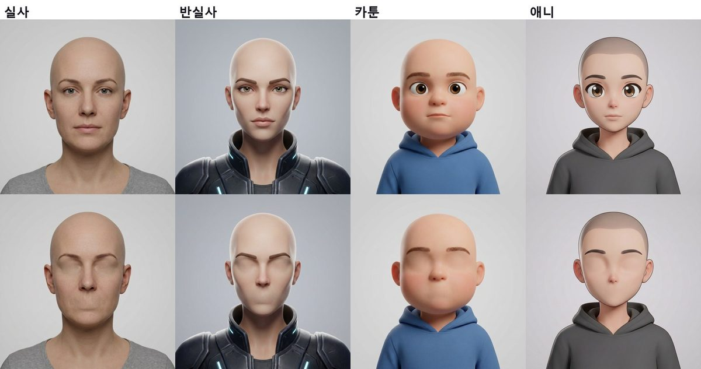<figcaption><b>그림 2.</b> 위: 원본 정면 그림. 아래: Tripo Studio의 Nano Banana Pro 편집으로 눈과 입만 지운 그림(무료). 코·귀·눈썹은 남겼습니다. 그림 크기는 1024px라서 세부가 적습니다(6장).</figcaption></figure>

<h3>3-2. 지운 머리 3D와 원본에 맞추기</h3>
<p>지운 그림을 Tripo H3.1로 3D로 만들었습니다(머리당 15크레딧, 질감 없음). 그다음 <code>align_noface.py</code>가 원본 머리 위치로 옮깁니다.</p>
<ol>
<li>정수리 아래 머리 폭을 깊이별로 재서 두 머리의 크기를 맞춥니다(눈·입이 없는 부분이라 두 머리가 같아야 하는 곳).</li>
<li>정수리끼리, 두개골 윗부분 중심끼리 맞춥니다.</li>
<li>눈·입에서 22mm 이상 떨어진 원본 점으로 닮음 ICP를 돌립니다(가까운 80%만 사용).</li>
</ol>
<figure>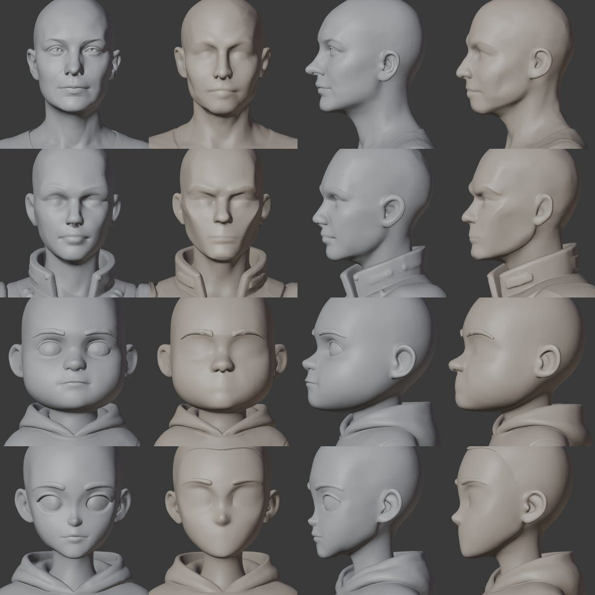<figcaption><b>그림 3.</b> 줄마다 한 스타일(위부터 실사·반실사·카툰·애니). 회색이 원본, 살구색이 맞춘 지운 머리입니다. 정면과 옆면 모두 위치와 크기가 맞습니다.</figcaption></figure>
<div class="tbl"><table>
<tr><th>머리</th><th>처음 크기 배율</th><th>폭 차이 RMS</th><th>표면 차이 중앙값</th><th>표면 차이 90%</th></tr>
<tr><td>실사 f02</td><td class="num">1.654</td><td class="num">2.99 mm</td><td class="num">1.76 mm</td><td class="num">4.17 mm</td></tr>
<tr><td>반실사 f06</td><td class="num">1.621</td><td class="num">1.93 mm</td><td class="num">1.51 mm</td><td class="num">4.49 mm</td></tr>
<tr><td>카툰 f11</td><td class="num">0.630</td><td class="num">2.08 mm</td><td class="num">0.79 mm</td><td class="num">3.18 mm</td></tr>
<tr><td>애니 f09</td><td class="num">1.020</td><td class="num">1.15 mm</td><td class="num">1.10 mm</td><td class="num">4.00 mm</td></tr>
</table></div>

<h3>3-3. Tripo 눈·입 부품</h3>
<figure>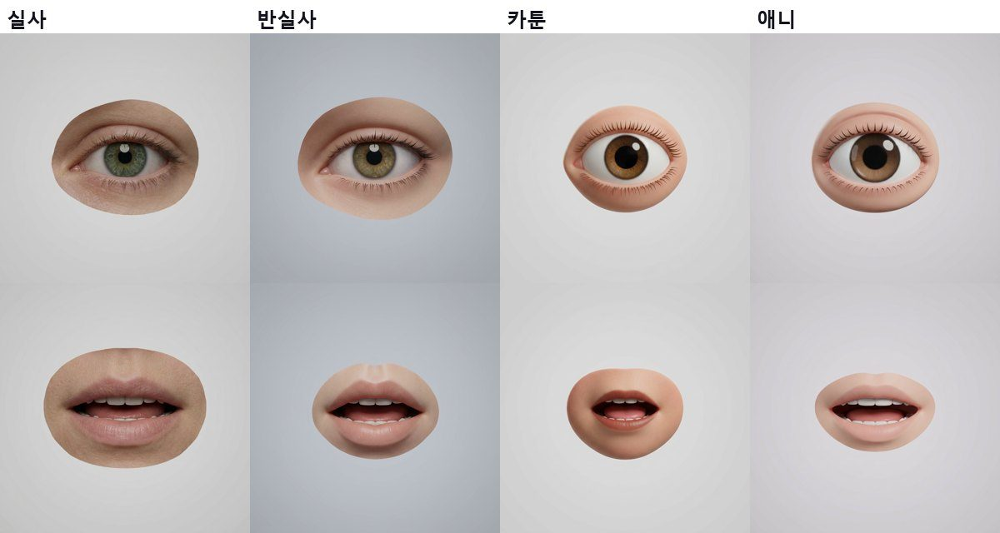<figcaption><b>그림 4.</b> 스타일마다 눈 1개·입 1개 그림(무료 편집). 입은 이가 보이게 약간 벌렸습니다. 부품 하나가 그림 안에서 300px 정도라 작습니다.</figcaption></figure>
<figure>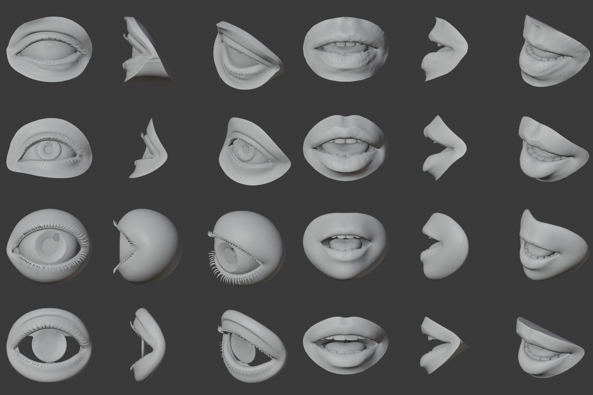<figcaption><b>그림 5.</b> Tripo 3D 결과(부품당 15크레딧). 줄마다 한 스타일, 왼쪽 3칸이 눈(정면·옆·3/4), 오른쪽 3칸이 입입니다. 눈알·속눈썹·눈꺼풀 피부, 입술·이·혀가 모두 <b>한 덩어리 표면</b>이라 그대로는 깜빡이거나 입을 벌릴 수 없습니다.</figcaption></figure>

<h3>3-4. Blender 입 부품</h3>
<figure><div class="svgwrap">
<svg viewBox="0 0 860 250" role="img" aria-label="입 부품 고리 구조">
 <g font-size="12.5">
  <ellipse cx="200" cy="125" rx="180" ry="105" class="s-soft st-muted" stroke-width="1.5"/>
  <ellipse cx="200" cy="125" rx="150" ry="80" fill="none" class="st-muted" stroke-width="1"/>
  <ellipse cx="200" cy="125" rx="125" ry="58" fill="none" class="st-muted" stroke-width="1"/>
  <path d="M95 125 C140 85 260 85 305 125 C260 170 140 170 95 125 Z" class="s-paper st-acc" stroke-width="2"/>
  <path d="M110 125 C150 105 250 105 290 125" fill="none" class="st-acc" stroke-width="1"/>
  <path d="M110 125 C150 145 250 145 290 125" fill="none" class="st-acc" stroke-width="1"/>
  <path d="M95 125 H305" class="st-bad" stroke-width="2.5"/>
  <text x="200" y="30" text-anchor="middle" class="s-muted">구멍 테두리 (지운 머리)</text>
  <text x="200" y="112" text-anchor="middle" class="s-ink" font-size="11.5">윗입술 고리 6줄</text>
  <text x="200" y="146" text-anchor="middle" class="s-ink" font-size="11.5">아랫입술 고리 6줄</text>
  <text x="200" y="245" text-anchor="middle" class="s-muted">피부 고리 6줄 (바깥 2줄은 머리 표면에 섞음)</text>
  <g transform="translate(420,20)">
   <text x="0" y="16" class="s-ink" font-weight="600">만드는 순서</text>
   <text x="0" y="42" class="s-ink">① 입 둘레 타원(입꼬리 폭 ×1.45)을 지운 머리에서 잘라냄</text>
   <text x="0" y="66" class="s-ink">② 테두리 점 수 = 모든 고리의 점 수 (80~151)</text>
   <text x="0" y="90" class="s-ink">③ 테두리 → 바깥 입술선(MediaPipe 61~291) → 입술 맞닿는 선</text>
   <text x="0" y="114" class="s-ink">④ 맨 안쪽 고리는 위·아래가 <tspan class="s-bad" font-weight="600">다른 점</tspan> = 입술 틈</text>
   <text x="0" y="138" class="s-ink">⑤ 틈 뒤에 입 주머니 3줄 + 마개</text>
   <text x="0" y="162" class="s-ink">⑥ 깊이: 원본 표면(orig) 또는 볼록 입술 계산식(proc)</text>
   <text x="0" y="186" class="s-ink">⑦ 정점 그룹 mouth_upper / lower / skin / bag</text>
   <text x="0" y="216" class="s-muted">u 값: 입꼬리 0 → 윗입술 → 반대 입꼬리 0.5 → 아랫입술</text>
  </g>
 </g>
</svg></div>
<figcaption><b>그림 6.</b> 입 부품의 고리 구조. 빨간 선이 입술 틈입니다. 위·아래 입술이 처음부터 다른 점이라 자르는 단계가 없습니다.</figcaption></figure>
<figure>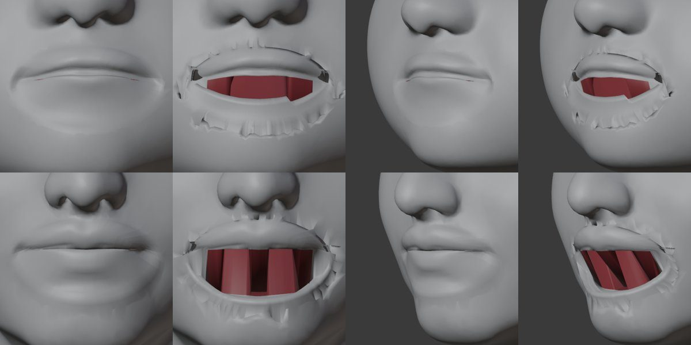<figcaption><b>그림 7.</b> 왼쪽 2열 실사 f02, 오른쪽 2열 카툰 f11. 위 줄은 원본 표면(orig), 아래 줄은 계산식(proc). 각 쌍의 왼쪽이 다문 입, 오른쪽이 시험으로 벌린 입입니다. 다문 입은 매끈하지만, 벌리면 <b>구멍 테두리와 첫 고리 사이가 찢어집니다</b>. 눈과 같은 원인입니다(4장). 입 안 빨간 판은 임시 주머니입니다.</figcaption></figure>
<div class="tbl"><table>
<tr><th>머리 · 모양</th><th>입 폭</th><th>테두리 점</th><th>고리</th><th>새 정점</th><th>구멍 고리 수</th></tr>
<tr><td>실사 f02 · orig</td><td class="num">52.0 mm</td><td class="num">128</td><td class="num">13</td><td class="num">1,921</td><td class="num">1</td></tr>
<tr><td>실사 f02 · proc</td><td class="num">52.0 mm</td><td class="num">80</td><td class="num">13</td><td class="num">1,201</td><td class="num">-</td></tr>
<tr><td>카툰 f11 · orig</td><td class="num">47.5 mm</td><td class="num">151</td><td class="num">13</td><td class="num">2,266</td><td class="num warn">3 (151·128·2)</td></tr>
<tr><td>카툰 f11 · proc</td><td class="num">47.5 mm</td><td class="num">100</td><td class="num">13</td><td class="num">1,501</td><td class="num">-</td></tr>
</table></div>

<h3>3-5. Blender 눈 부품 (1판, 실패)</h3>
<p>입과 같은 방식입니다. 눈 윤곽(T14 눈꺼풀 테두리)을 둘러싼 타원을 지우고, 테두리에서 눈꺼풀 가장자리까지 고리 11줄, 그 뒤에 눈꺼풀 두께 2줄(1.2mm, 2.4mm)을 안구 쪽으로 넣습니다. 눈알은 원본 눈 표면에 맞춘 구입니다.</p>
<figure>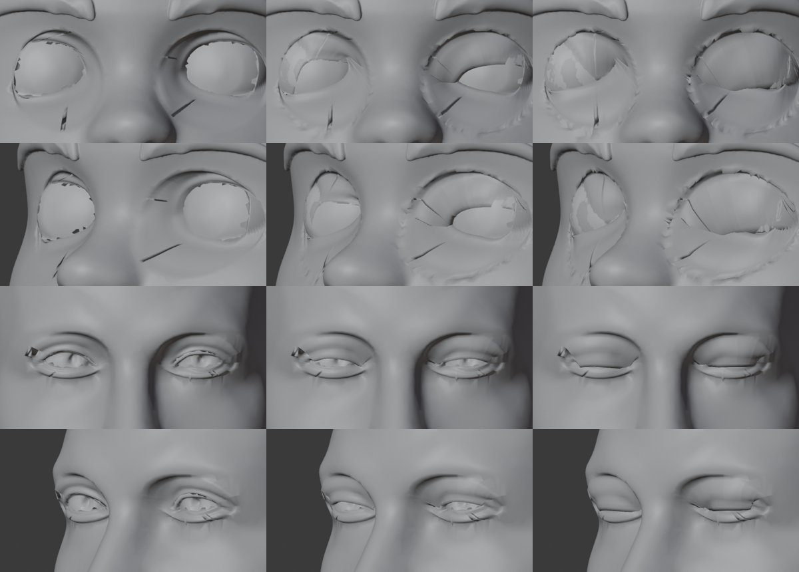<figcaption><b>그림 8.</b> 위 2줄 카툰 f11, 아래 2줄 실사 f02. 왼쪽부터 뜬 눈·반쯤·감은 눈. f11은 구멍이 크게 열리고 눈꺼풀이 구겨지며, f02는 테두리에 검은 금과 조각이 보입니다.</figcaption></figure>

<h2>4. 눈 실패 원인과 고치는 방법</h2>
<figure>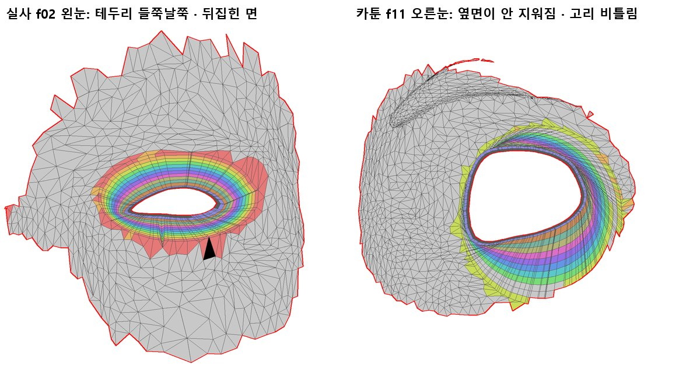<figcaption><b>그림 9.</b> 눈 주변 면을 정면으로 펼친 진단 그림. 색은 고리 번호, 검은 면은 뒤집힌 면, 빨간 선은 열린 테두리입니다. 왼쪽 f02는 첫 고리(분홍) 바깥 테두리가 삼각형 모서리를 따라 들쭉날쭉하고 뒤집힌 면이 있습니다. 오른쪽 f11은 눈 바깥쪽(그림 왼쪽)의 머리 면이 지워지지 않고 남아 있고, 고리가 한쪽으로 쏠려 비틀렸습니다.</figcaption></figure>
<div class="tbl"><table>
<tr><th>증상</th><th>원인</th><th>고치는 방법 (2판)</th></tr>
<tr><td>f11 눈 주변 크게 꺼짐, 구멍이 반만 열림</td><td>정면(y축) 투영만 씀. 큰 눈은 구멍이 머리 옆면까지 감싸는데, 옆면 면은 "앞쪽" 조건(front_y)에 걸려 지워지지 않음. 깊이도 정면 광선이라 옆면에서 빗나감</td><td>눈마다 <b>안구 중심에서 바깥으로 쏘는 광선 좌표</b>를 씀. 구멍·고리·깊이 모두 이 광선으로 정함. 지울 면은 눈 중심 면에서 이어진 면만 찾아감(뒤통수 면 보호)</td></tr>
<tr><td>테두리의 가는 금, 뒤집힌 면</td><td>테두리 점 수(72~165)와 고리 점 수를 억지로 같게 맞추고 호 길이로 짝지음. 테두리가 들쭉날쭉하면 짝이 엇갈려 면이 꼬임</td><td>구멍은 타원 위에서 정확히 자르고(테두리 점이 모두 타원 위), 고리 점 수는 64개로 고정. 테두리와 첫 고리는 <b>각도 순서대로 지퍼처럼 삼각형</b>으로 이음</td></tr>
<tr><td>고리가 소용돌이처럼 쏠림</td><td>테두리 시작점(+x)과 눈꼬리 위치가 달라도 둘 다 u=0으로 짝지음</td><td>눈 중심에서 같은 방향에 있는 점끼리 이음. 눈꼬리 두 개가 u=0, 0.5에 정확히 오게 각도를 구간별로 맞춤</td></tr>
<tr><td>큰 눈일수록 구멍이 너무 큼</td><td>구멍 폭 = 눈 폭 ×1.6 (f11은 56mm)</td><td>눈 윤곽에서 바깥으로 띠 두께만큼만: 옆 3~7mm, 아래 3~8mm, 위는 눈썹까지 거리의 55%. 코 쪽은 더 좁게</td></tr>
</table></div>
<p>입 부품도 같은 구멍·잇기 함수를 쓰므로, 고친 함수를 입에도 적용합니다.</p>

<h3>4-1. 2판 방법</h3>
<figure><div class="svgwrap">
<svg viewBox="0 0 860 300" role="img" aria-label="눈 부품 2판 방법">
 <defs><marker id="ar2" viewBox="0 0 10 10" refX="9" refY="5" markerWidth="7" markerHeight="7" orient="auto"><path d="M0,0 L10,5 L0,10 z" class="s-muted"/></marker></defs>
 <g font-size="12.5">
  <text x="10" y="20" class="s-ink" font-weight="600">① 광선 좌표 (옆에서 본 모습)</text>
  <path d="M30 150 C 90 40, 220 40, 270 150" fill="none" class="st-muted" stroke-width="2"/>
  <text x="208" y="62" class="s-muted">머리 표면</text>
  <circle cx="150" cy="150" r="55" class="s-soft st-acc" stroke-width="1.5"/>
  <text x="150" y="190" text-anchor="middle" class="s-acc">안구</text>
  <circle cx="150" cy="150" r="3" class="s-ink"/><text x="158" y="163" class="s-ink" font-size="11">C</text>
  <circle cx="150" cy="205" r="4" class="s-bad"/><text x="160" y="222" class="s-bad" font-size="11.5">Q (안구 반지름만큼 뒤)</text>
  <path d="M150 205 L60 62 M150 205 L110 48 M150 205 L150 44 M150 205 L190 48 M150 205 L240 62" class="st-bad" stroke-width="1" stroke-dasharray="3 3"/>
  <text x="10" y="260" class="s-muted">Q에서 쏜 광선은 표면을 한 번만 만남 →</text>
  <text x="10" y="278" class="s-muted">옆으로 감싼 큰 눈도 펼칠 수 있음</text>

  <text x="300" y="20" class="s-ink" font-weight="600">② 구멍 곡선 (각도마다 줄임)</text>
  <ellipse cx="420" cy="140" rx="100" ry="70" fill="none" class="st-muted" stroke-width="1.5" stroke-dasharray="5 4"/>
  <path d="M520 140 C 520 185, 470 210, 420 210 C 370 210, 345 185, 345 160 C 345 130, 330 110, 350 90 C 370 74, 395 70, 420 70 C 475 70, 520 95, 520 140 Z" fill="none" class="st-acc" stroke-width="2.2"/>
  <path d="M370 140 C 390 112, 450 112, 470 140 C 450 160, 390 160, 370 140 Z" class="s-paper st-ink" stroke-width="1.5"/>
  <text x="420" y="145" text-anchor="middle" class="s-ink" font-size="11">눈꺼풀 가장자리</text>
  <text x="300" y="250" class="s-muted">점선: 처음 타원 · 파랑: 코 옆을 넘지 않게 줄인 곡선</text>
  <text x="300" y="268" class="s-muted">곡선 위 표면점과 가장자리 사이 3D 거리 ≤ 띠×1.3 + 1.5mm</text>

  <text x="600" y="20" class="s-ink" font-weight="600">③ 지퍼 잇기</text>
  <g class="st-muted" stroke-width="1">
   <path d="M610 70 L640 66 L668 72 L690 64 L720 70 L748 66 L780 72 L810 68 L840 70" fill="none" class="st-ink" stroke-width="1.8"/>
   <path d="M615 130 L695 130 L775 130 L840 130" fill="none" class="st-acc" stroke-width="1.8"/>
   <path d="M610 70 L615 130 M640 66 L615 130 M668 72 L615 130 M668 72 L695 130 M690 64 L695 130 M720 70 L695 130 M748 66 L695 130 M748 66 L775 130 M780 72 L775 130 M810 68 L775 130 M810 68 L840 130 M840 70 L840 130" fill="none"/>
  </g>
  <text x="610" y="55" class="s-ink" font-size="11.5">구멍 테두리 (점 수 제각각)</text>
  <text x="610" y="150" class="s-acc" font-size="11.5">첫 고리 (64점 고정)</text>
  <text x="600" y="190" class="s-muted">각도 순서대로 다음 점이 먼저 오는 쪽을</text>
  <text x="600" y="208" class="s-muted">한 칸씩 전진 → 삼각형이 접히지 않음</text>
  <text x="600" y="240" class="s-muted">④ 깊이: 여러 표면 중 예상값에 가까운 것</text>
  <text x="600" y="258" class="s-muted">⑤ 깊이 격자를 부드럽게 (울퉁불퉁 제거)</text>
  <text x="600" y="276" class="s-muted">⑥ 감기: 같은 가로 위치끼리 만남</text>
 </g>
</svg></div>
<figcaption><b>그림 10.</b> 2판의 6가지 변경. 구멍 곡선 위의 점은 모두 원래 모서리 위에 새로 넣은 점이라, 지운 머리의 원래 점은 하나도 움직이지 않습니다.</figcaption></figure>

<h3>4-2. 2판 결과</h3>
<figure>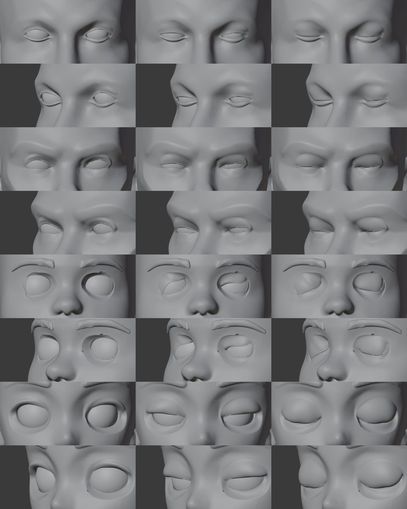<figcaption><b>그림 11.</b> 2판, 모양은 원본 표면(orig). 위에서부터 실사 f02, 반실사 f06, 카툰 f11, 애니 f09이고, 각 스타일마다 정면과 3/4을 보여 줍니다. 왼쪽부터 뜬 눈·반쯤·감은 눈입니다. 감은 눈은 위 눈꺼풀이 80%, 아래 눈꺼풀이 20% 움직여 만납니다. f06 왼쪽 볼의 세로 줄은 Tripo가 만든 지운 머리에 원래 있던 주름입니다(입력 결함, 그림 3에도 보임).</figcaption></figure>
<figure>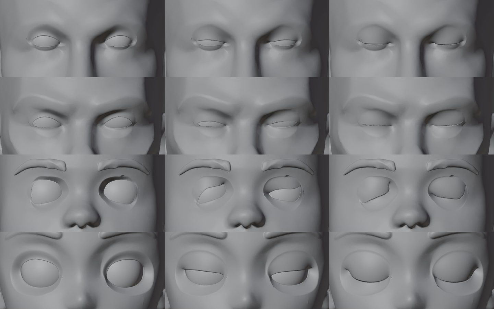<figcaption><b>그림 12.</b> 2판, 모양은 계산식(proc). 원본의 눈꺼풀 주름 대신 안구 위 0.6mm 껍질로 매끈하게 이어집니다. 정면만 보여 줍니다.</figcaption></figure>
<figure>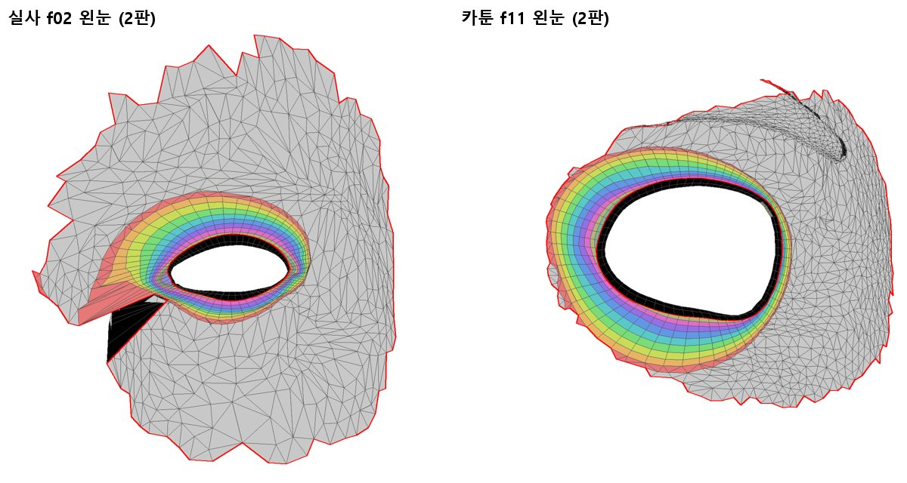<figcaption><b>그림 13.</b> 2판 면 지도(그림 9와 같은 방법). 고리가 구멍 둘레를 고르게 채우고, 들쭉날쭉한 테두리·뒤집힌 면·코 쪽 쐐기가 없습니다. 검은 띠는 눈꺼풀 두께(뒤를 향한 면)라 정상입니다.</figcaption></figure>
<div class="tbl"><table>
<tr><th>머리 · 눈</th><th>눈 폭 × 높이</th><th>구멍 테두리 점</th><th>구멍 고리 수</th><th>꼬인 점</th><th>줄인 각도 (96개 중)</th><th>눈꺼풀–안구 최소 틈</th><th>가장자리–안구 틈</th></tr>
<tr><td>실사 f02 L / R</td><td class="num">30.7×10.2 / 31.1×9.6</td><td class="num">59 / 50</td><td class="num good">1 / 1</td><td class="num">0 / 0</td><td class="num">24 / 25</td><td class="num">0.3 mm</td><td class="num">0.67 / 0.73 mm</td></tr>
<tr><td>반실사 f06 L / R</td><td class="num">28.8×11.5 / 29.9×10.6</td><td class="num">56 / 61</td><td class="num good">1 / 1</td><td class="num">0 / 0</td><td class="num">21 / 25</td><td class="num">0.3 mm</td><td class="num">0.4 / 0.4 mm</td></tr>
<tr><td>카툰 f11 L / R</td><td class="num">39.9×29.2 / 38.6×30.2</td><td class="num">100 / 100</td><td class="num good">1 / 1</td><td class="num">0 / 0</td><td class="num">60 / 57</td><td class="num">0.3 mm</td><td class="num">0.4 / 0.4 mm</td></tr>
<tr><td>애니 f09 L / R</td><td class="num">44.8×25.6 / 45.9×25.7</td><td class="num">116 / 107</td><td class="num good">1 / 1</td><td class="num">0 / 0</td><td class="num">39 / 40</td><td class="num">0.3 mm</td><td class="num">0.52 / 0.4 mm</td></tr>
</table></div>
<p>눈 폭·높이는 광선 좌표 기준(mm에 가까움)입니다. 열린 테두리는 4개 머리 모두 눈마다 64개(눈꺼풀 두께 안쪽 끝)뿐입니다. 1판에서 165개 점짜리 비틀린 고리와 9칸짜리 따로 난 구멍이 있던 것과 비교됩니다. 고리는 64점 × 11줄 + 두께 2줄입니다.</p>
<p>남은 것:</p>
<ul>
<li>f11 오른눈을 감으면 원본 눈꺼풀 주름이 사선으로 보입니다.</li>
<li>f09 위 눈꺼풀이 약간 울퉁불퉁합니다.</li>
<li>눈 가장자리에 가는 어두운 선이 보입니다. 눈꺼풀 두께 면이며, 색을 입히면 가려질 것으로 봅니다.</li>
</ul>

<h3>4-3. 입 부품 2판</h3>
<p>입도 눈과 같은 방법으로 바꿨습니다.</p>
<ul>
<li>광선 시작점은 입술 뒤 3 × 입 반폭 위치입니다.</li>
<li>구멍은 바깥 입술선을 둘러싼 달걀 모양이고, 각도마다 줄입니다.</li>
<li>테두리와 첫 고리는 지퍼로 잇습니다.</li>
<li>깊이는 예상값에 가까운 표면을 고른 뒤 다듬습니다.</li>
<li>고리는 80점 × 12줄입니다. 바깥 6줄은 피부, 안쪽 6줄은 입술이고, 맨 안쪽 줄이 입술 틈입니다.</li>
</ul>
<figure>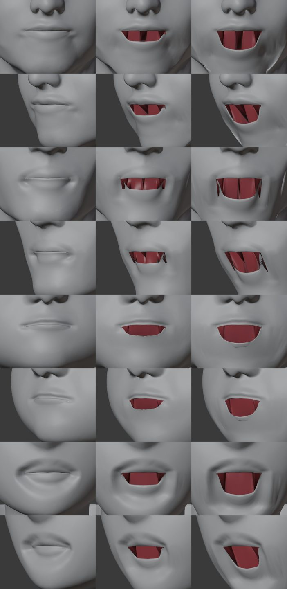<figcaption><b>그림 14.</b> 입 부품 2판(원본 표면 모양). 위에서부터 실사 f02, 반실사 f06, 카툰 f11, 애니 f09이고, 스타일마다 정면과 3/4을 보여 줍니다. 왼쪽부터 다문 입, 턱 8°, 16°입니다. 1판(그림 7)의 테두리 찢어짐이 사라졌습니다. 미리보기의 턱 가중치는 입술 고리와 주변 피부가 부드럽게 이어지는 임시 값이고, 실제 리그에서는 Rigify 가중치를 씁니다. 입 안 빨간 판은 임시 주머니입니다.</figcaption></figure>
<div class="tbl"><table>
<tr><th>머리</th><th>입 폭</th><th>구멍 테두리 점</th><th>구멍 고리 수</th><th>꼬인 점</th><th>뒤집힘</th></tr>
<tr><td>실사 f02</td><td class="num">52.0 mm</td><td class="num">104</td><td class="num good">1</td><td class="num">0</td><td class="num">없음</td></tr>
<tr><td>반실사 f06</td><td class="num">43.8 mm</td><td class="num">73</td><td class="num good">1</td><td class="num">0</td><td class="num">없음</td></tr>
<tr><td>카툰 f11</td><td class="num">47.5 mm</td><td class="num">128</td><td class="num good">1</td><td class="num">0</td><td class="num">없음</td></tr>
<tr><td>애니 f09</td><td class="num">38.5 mm</td><td class="num">95</td><td class="num good">1</td><td class="num">0</td><td class="num">없음</td></tr>
</table></div>

<h2>4b. Tripo 부품 모양 + 고리 구조 (2단계)</h2>
<p>Tripo 부품을 <b>모양 기증자</b>로 씁니다. <code>organ_donor.py</code>가 부품을 머리 위에 놓으면, 고리 만들기(<code>SHAPE=tripo</code>)는 깊이만 그 부품 표면에서 읽습니다. 고리 구조와 열린 경계는 Blender 방식과 같습니다.</p>
<ol>
<li><b>입</b>: 정면 광선 깊이에서 주변 곡면을 빼고 남는 깊은 곳이 벌어진 입 구멍입니다. 그 좌우 끝을 원본 입꼬리에 맞춥니다. 벌린 입은 칸마다 구멍 높이의 절반씩 위·아래 입술을 모아 다문 입으로 만들고, 이·혀 같은 안쪽 형상은 지웁니다.</li>
<li><b>눈(1차 실패)</b>: 처음 만든 Tripo 눈 부품은 눈꺼풀·안구·속눈썹이 한 면이고 질감이 없었습니다. 열린 경계를 깊이, 구 맞춤, 부품 그림 색, 주름선의 4가지 방법으로 찾았지만 4개 중 1~2개만 맞았습니다.</li>
<li><b>눈(2차)</b>: 사용자 승인으로 같은 눈 그림(4K로 다시 그림)을 <b>Generate in Parts(Detailed)</b>로 다시 만들었습니다(45 × 4 = 180크레딧, 잔액 22,345 → 22,165). 안구·홍채·동공·눈꺼풀·속눈썹·피부가 따로 나옵니다.
  <ul>
  <li>가운데 부품(동공·홍채)에서 시작해 이웃 부품을 더합니다. 경계에서 앞으로 튀어나오지 않고, 부품 바깥 테두리에 닿지 않으며, 너무 작지 않은 부품만 더합니다.</li>
  <li>더해진 부품이 안구이고, 그 부품이 보이는 칸이 열린 영역입니다.</li>
  <li>안구 부품과 속눈썹(작은 부품)은 지우고 눈꺼풀·피부만 기증자로 남깁니다.</li>
  </ul></li>
</ol>
<figure>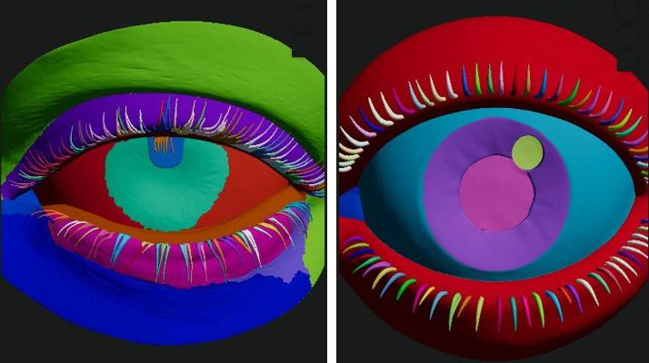<figcaption><b>그림 17.</b> Tripo Generate in Parts(Detailed) 결과. 왼쪽 실사 f02, 오른쪽 카툰 f11입니다. 색마다 다른 부품입니다. 안구(f02 빨강, f11 하늘색), 홍채, 동공, 반사점, 위·아래 눈꺼풀, 속눈썹 가닥, 주변 피부가 나뉩니다.</figcaption></figure>
<figure>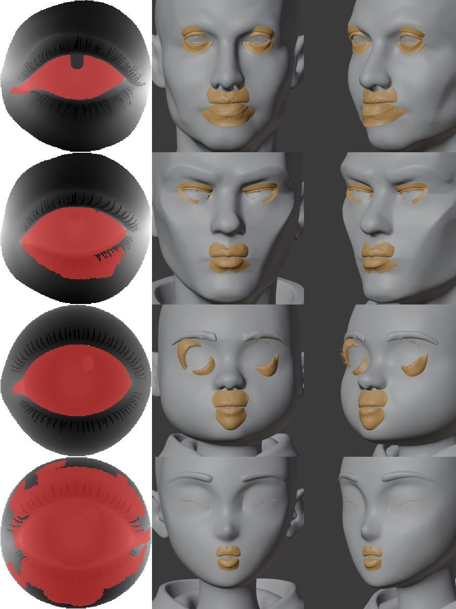<figcaption><b>그림 18.</b> 왼쪽은 부품 정면 깊이 그림에 찾은 열린 영역(빨강)을 겹친 것, 가운데·오른쪽은 머리 위에 놓은 기증자(주황, 안구·속눈썹 제거)입니다. 위에서부터 f02·f06·f11·f09입니다. f02·f11은 정확합니다. f06은 아래 눈꺼풀이 조금 섞였습니다. <b>f09는 실패</b>했습니다. Tripo가 흰자를 50여 조각으로 잘게 나눠 영역이 눈꺼풀까지 번졌기 때문입니다. f09 Tripo 변형은 눈만 Blender 방식을 씁니다.</figcaption></figure>
<figure>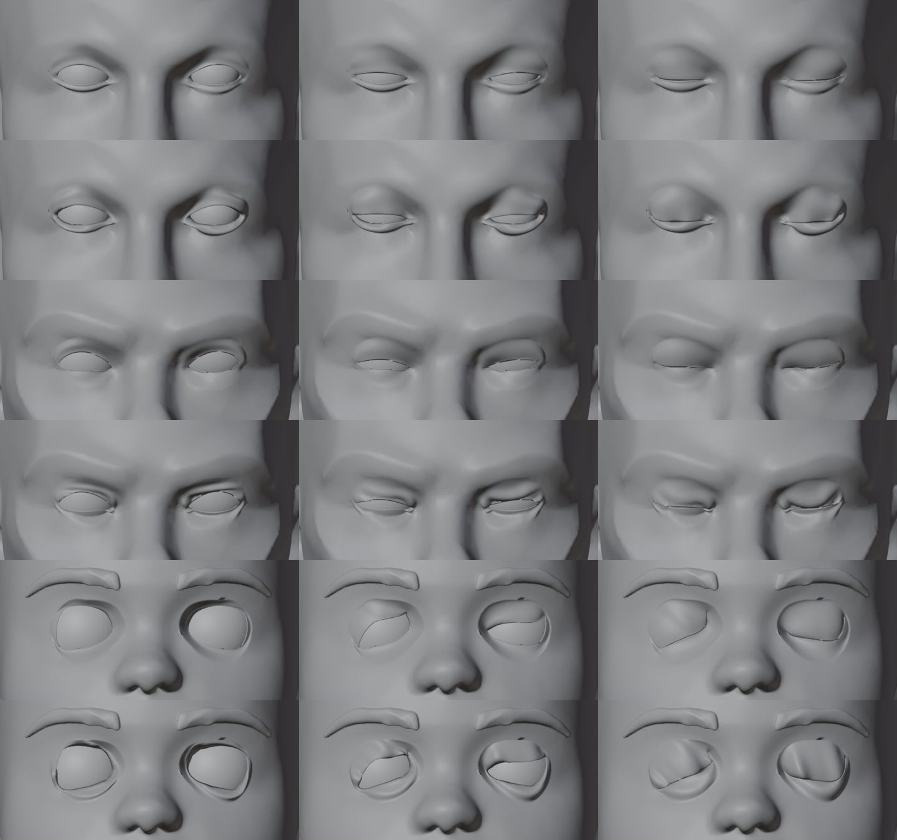<figcaption><b>그림 19.</b> 눈: 스타일마다 위 줄이 Blender 방식(원본 표면), 아래 줄이 Tripo 모양입니다. 위에서부터 f02·f06·f11이고, 왼쪽부터 뜬 눈·반쯤·감은 눈입니다. Tripo 모양은 f02의 윗눈꺼풀이 더 도톰하고 자연스럽습니다. f06·f11은 눈꺼풀 가장자리가 물결치고 감을 때 주름이 생깁니다.</figcaption></figure>
<figure>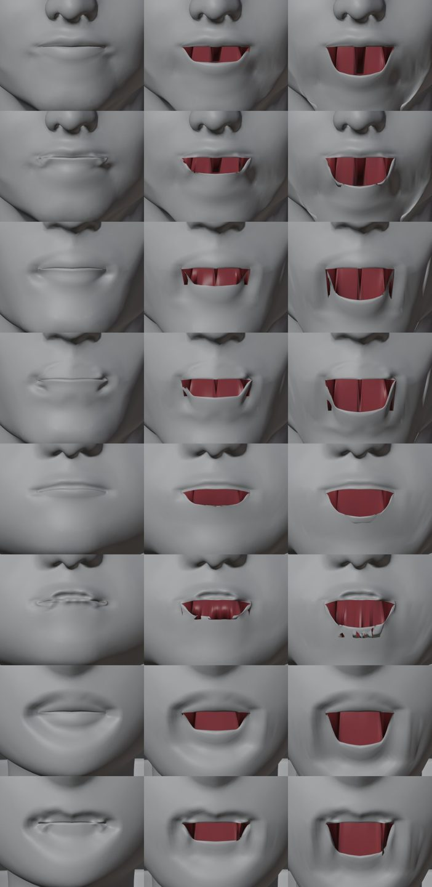<figcaption><b>그림 20.</b> 입: 스타일마다 위 줄이 Blender 방식, 아래 줄이 Tripo 모양입니다. 위에서부터 f02·f06·f11·f09이고, 왼쪽부터 다문 입·턱 8°·16°입니다. Tripo 입은 f02·f09가 입술 선(큐피드 활)이 또렷합니다. f06은 부품 가장자리 쪽이 볼록하고, f11은 벌릴 때 아랫입술이 찢어집니다.</figcaption></figure>

<h2>4c. 겹침생성 (사용자 제안)</h2>
<p>사용자 제안(2026-10-12)이고, 사용자가 <b>겹침생성</b>이라고 이름 붙였습니다. 바탕을 눈·입 지운 머리 대신 <b>이목구비가 있는 원본 머리</b>로 하고, 그 위에 원본 표면과 같은 모양의 고리 부품을 덧씌운 뒤 겹치는 원본 면을 지웁니다. 지금 도구로 바로 됩니다. 원본을 두 벌 놓고, 한 벌은 잘리고 부품을 받는 바탕, 다른 한 벌은 고리가 모양을 읽는 원본으로 씁니다.</p>
<ul>
<li><b>좋은 점</b>
  <ul>
  <li>코·볼·눈썹·귀가 원본 그대로이고, 부품도 원본 표면을 따릅니다(원본 유지 원칙).</li>
  <li>지운 머리와 원본 사이의 정렬 오차(0.8~1.8mm)와 지운 머리의 결함(f06 볼 주름)이 사라집니다.</li>
  <li>지운 머리를 만들 필요가 없어 머리당 15크레딧을 아낍니다.</li>
  </ul></li>
<li><b>고친 점</b>: 원본은 눈 안쪽 구석이 깊습니다. 광선 시작점이 안구 반지름만큼 뒤일 때는 f02에서 코 옆면이 다시 접혀 구멍에 들어왔습니다. 반지름의 2배 뒤로 옮기니 4개 모두 깨끗해졌습니다. 이 값이 이제 기본값입니다(<code>EYE_Q_BACK=2.0</code>).</li>
</ul>
<figure>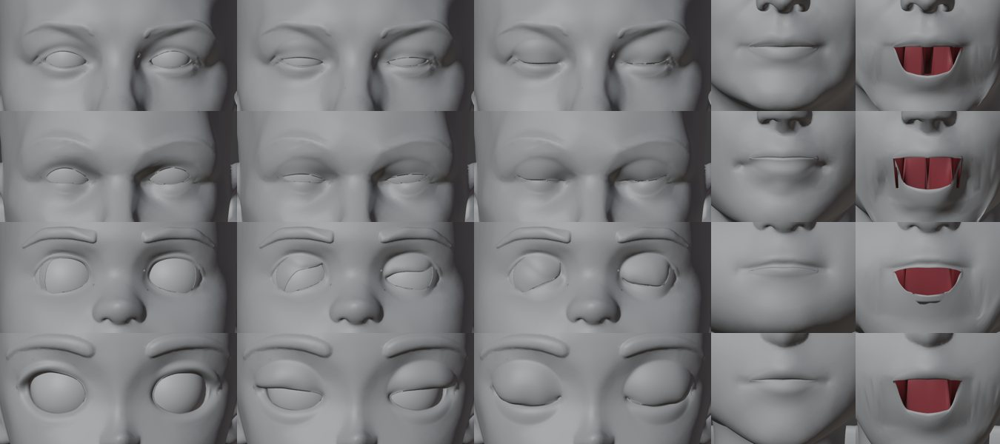<figcaption><b>그림 21.</b> 원본 덧씌우기 변형(회색 미리보기). 위에서부터 f02·f06·f11·f09입니다. 왼쪽 3칸은 뜬 눈·반쯤·감은 눈, 오른쪽 2칸은 다문 입·턱 16°입니다. 4개 모두 금·조각 없이 닫힙니다. f09 눈꺼풀은 지운 머리 방식보다 매끈합니다.</figcaption></figure>

<h2>4d. 좌우 완전 대칭화</h2>
<p>사용자 결정(2026-10-12, "완전 대칭화")입니다. 원본 머리는 좌우가 조금씩 다릅니다. 그래서 왼쪽 눈과 오른쪽 눈이 다르게 만들어지고, 표정도 좌우가 어긋났습니다(f06은 좌우 표정 차이 47%). 겹침생성의 바탕 머리를 먼저 완전 대칭으로 만들고, 그 위에서 만든 부품·뼈 무게·표정도 대칭으로 고정합니다.</p>
<ol>
<li><b>바탕 대칭</b> (<code>sym_mirror.py</code>)
  <ul>
  <li>머리를 x = 0에서 잘라 왼쪽 반만 남깁니다. 자른 곳이 가운데 선 점이 됩니다.</li>
  <li>남은 점마다 반대쪽 표면(거울에 비친 점에서 가장 가까운 원본 표면)과 평균을 냅니다. 한쪽을 베끼는 것이 아니라 좌우 평균 모양입니다.</li>
  <li>그 반을 거울로 복사해 가운데 선에서 붙입니다. 점 하나하나가 정확히 대칭입니다.</li>
  <li>35점 기준점과 눈 테두리·안구 중심도 같은 방법으로 좌우 평균을 냅니다.</li>
  </ul></li>
<li><b>부품 대칭 고정</b> (<code>sym_lock.py</code>): 모든 점을 거울 짝과 묶습니다. 다문 입술 틈처럼 위·아래 점이 같은 자리에 있으면 고리 번호와 각도로 짝을 찾습니다.
  <ul>
  <li><code>mesh</code>: 오른쪽 점 = 왼쪽 점의 거울.</li>
  <li><code>weights</code>: 오른쪽 점은 짝의 뼈 무게를 받고, 뼈 이름의 .L/.R, Left/Right를 바꿉니다.</li>
  <li><code>keys</code>: ...Right 표정 = ...Left 표정의 거울. 짝이 없는 표정(jawOpen 등)은 자기 거울과 평균합니다.</li>
  </ul></li>
<li><b>리깅 점</b>: T14 리깅 점(뼈 92개 자리)은 확인 결과 이미 대칭입니다(짝 39쌍, 차이 0.0mm).</li>
</ol>
<div class="tbl"><table>
<tr><th>머리</th><th>얼굴 변화 중앙값</th><th>얼굴 변화 95%</th><th>얼굴 변화 최대</th><th>대칭 후 좌우 차이</th><th>안구 중심 이동</th></tr>
<tr><td>실사 f02</td><td>0.34mm</td><td>1.98mm</td><td>4.59mm</td><td>0.0mm</td><td>0.44mm</td></tr>
<tr><td>반실사 f06</td><td>3.04mm</td><td>11.3mm</td><td>30.8mm</td><td>0.0mm</td><td>1.80mm</td></tr>
<tr><td>카툰 f11</td><td>0.54mm</td><td>2.14mm</td><td>3.06mm</td><td>0.0mm</td><td>0.69mm</td></tr>
<tr><td>애니 f09</td><td>1.20mm</td><td>3.92mm</td><td>6.89mm</td><td>0.0mm</td><td>0.86mm</td></tr>
</table></div>
<p>f06은 원본의 좌우 차이가 커서 변화가 큽니다(얼굴 영역에 옷깃이 일부 들어가 최대값이 큼). 나머지 셋은 얼굴 변화가 대부분 2mm 아래입니다.</p>
<figure>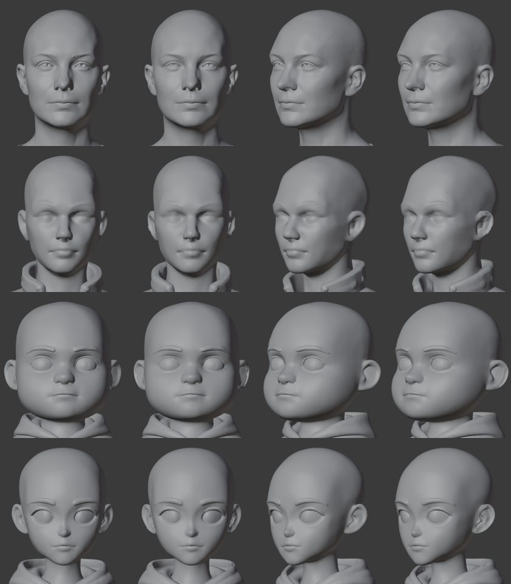<figcaption><b>그림 22.</b> 대칭 전후. 위에서부터 f02·f06·f11·f09이고, 왼쪽부터 원본 정면·대칭 정면·원본 3/4·대칭 3/4입니다. 눈으로 보이는 차이는 작고, 좌우가 정확히 같아집니다.</figcaption></figure>
<p><b>찾아 고친 오류</b>: 거울 복사는 점 순서를 그대로 두기 때문에 복사한 반쪽의 면이 안쪽을 봅니다. 회색 렌더에서는 티가 안 나지만, 텍스처를 입힐 때 그 반쪽이 "뒤를 보는 면"으로 판정되어 옆·뒤 그림 색이 칠해졌습니다(그림 23 아래 줄). 복사한 면을 뒤집어 고쳤고, 바깥을 보는 면 비율이 좌우 같아졌습니다(f11: 0.81 / 0.80). 고친 바탕으로 4개를 다시 만들었습니다.</p>
<p><b>찾아 고친 오류 2</b>: 다시 만든 뒤 f02·f11·f09는 입 벌림(jawOpen)에서 입이 전혀 벌어지지 않았습니다(입술 틈 이동 0mm, 움직인 점 303개). Rigify 자동 무게(bone heat)가 "해를 찾지 못함"으로 실패해 얼굴 점 약 96,000개에 뼈 무게가 없었습니다. 원인은 가운데 선을 자를 때 생긴 찌꺼기 면입니다. 자르는 선이 기존 점에서 0.01~0.02mm 옆을 지나면 넓이가 거의 0인 바늘 같은 삼각형이 남습니다(f02 46개, f06 12개, 원본 0개).</p>
<ul>
<li>가운데 면에서 0.05mm 안의 점은 면 위의 점으로 봅니다.</li>
<li>평균을 낼 때 점이 가운데 면으로 접혀 들어가지 않게 합니다.</li>
<li>0.05mm보다 짧은 모서리는 합칩니다.</li>
</ul>
<p>이제 찌꺼기 면은 4개 모두 0개입니다. 체인에는 무게 없는 점이 1,000개를 넘으면 바로 멈추는 검사를 넣었습니다.</p>
<p><b>찾아 고친 오류 3</b>: 찌꺼기 면을 없앤 뒤 f02·f06·f09는 성공했지만 f11은 여전히 자동 무게가 실패했습니다(1.8초 만에 실패). 같은 메쉬로 세 가지를 시험했습니다.</p>
<div class="tbl"><table>
<tr><th>시험</th><th>무게 없는 점</th><th>시간</th></tr>
<tr><td>10배 크기 (기존)</td><td>99,456 / 99,456 (실패)</td><td>1.8초</td></tr>
<tr><td>30배 크기</td><td>61</td><td>18.6초</td></tr>
<tr><td>10배 + 점을 0.02mm 흔듦</td><td>0</td><td>19.2초</td></tr>
</table></div>
<p>좌우가 완전히 같은 메쉬는 가운데 선 점과 가운데 뼈(턱·코·혀)가 한 평면에 정확히 놓여 계산이 깨집니다. 무게 계산용 복사본만 0.02mm 흔들고, 실패하면 더 크게 흔들어 최대 3번 다시 합니다. 실제 메쉬는 그대로이고, 무게는 뒤의 대칭 고정 단계가 다시 정확히 대칭으로 맞춥니다.</p>
<p><b>찾아 고친 오류 4</b>: f09 입 벌림이 턱만 늘어나고 입술은 거의 안 벌어졌습니다. 턱을 여는 방향(부호)을 "턱을 10° 돌렸을 때 움직인 얼굴 점들의 평균 높이"로 정했는데, f09 대칭 머리에서 이 값이 반대로 나와 턱을 거꾸로 돌렸습니다. 이제는 턱 끝 뼈(chin)가 내려가는지로 정합니다. 뼈 위치만 보므로 무게와 관계없습니다.</p>
<figure>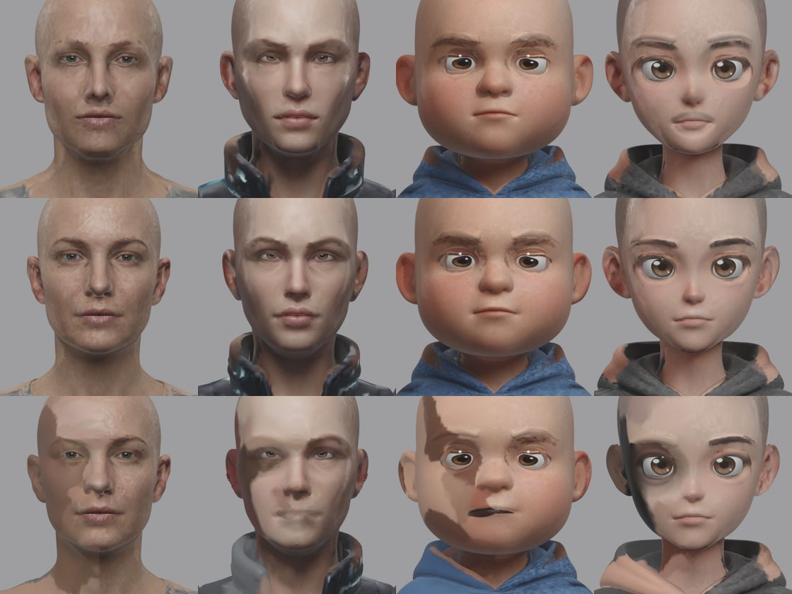<figcaption><b>그림 23.</b> 텍스처 쉬는 얼굴. 위에서부터 지운 머리+Blender, 겹침생성, 대칭(면 방향 오류 있던 판)입니다. 아래 줄은 얼굴 반쪽에 옆·뒤 그림 색(갈색·검정 얼룩)이 칠해졌습니다.</figcaption></figure>

<h2>4e. 입 안쪽과 눈꺼풀 고침</h2>
<p>사용자 지적(2026-10-12)입니다.</p>
<ol>
<li><b>입 안쪽</b> (<code>organ_mouth.py</code>): 예전에는 입술 틈 뒤에 고리 3개짜리 주머니만 있었습니다. 벌리면 입술 두께가 없고 안쪽이 납작했습니다.
  <ul>
  <li>입술 안쪽 말림 고리 2개: 틈에서 1.5mm·3.5mm 뒤로, 위·아래로 1~2mm 벌어지며 들어갑니다. 입술 두께가 생기고, 면은 피부 재질(입술 색)입니다.</li>
  <li>입속 고리 4개 + 막음 점: 7·14·23·30mm 뒤, 위·아래로 최대 11mm 벌어졌다가 목 쪽으로 좁아집니다. 재질은 <code>mouth_inner</code>(어두운 빨강)입니다. 크기는 입 너비 52mm 기준이고 입 너비에 비례합니다.</li>
  <li>모든 새 점에 고리 번호(<code>mouth_ring</code>)와 각도(<code>mouth_u</code>)가 있어 대칭 짝과 뼈 무게를 정확히 찾습니다.</li>
  </ul></li>
<li><b>입 안쪽 뼈 무게</b> (<code>organ_mouth_weights.py</code>, 새 단계): Rigify가 자동으로 준 무게 대신 정해진 규칙을 씁니다.
  <ul>
  <li>입술 안쪽 말림: 같은 각도의 입술 틈 점과 같은 무게.</li>
  <li>입속 아래쪽: 턱 뼈(DEF-jaw) 0.5~1.0, 위쪽: 0~0.5, 나머지는 머리 뼈. 가운데일수록 아래는 턱을 더 따르고 위는 덜 따릅니다. 막음 점은 0.5입니다.</li>
  </ul></li>
<li><b>눈 감기</b> (<code>organ_blink_keys.py</code>): 감은 눈꺼풀이 안구에서 떠서 부어 보였습니다. 감을 때 눈꺼풀이 안구 표면에서 최대 1.5mm(+원래 틈의 30%)까지만 뜨도록 안구에 붙였습니다.</li>
<li><b>눈꺼풀 색</b> (<code>organ_lid_colors.py</code>, 새 단계): 정면 그림을 칠하면 눈꺼풀 고리 일부에 눈동자·흰자 색이 묻어, 감으면 눈꺼풀에 눈이 비쳐 보였습니다. 눈꺼풀 칸마다 바깥 고리 2~3의 피부색을 가져와 안쪽 고리를 칠합니다. 가장자리 두 줄은 어두우면(속눈썹 선) 그대로 두고, 맨 끝은 조금 어둡게 해 속눈썹 선을 만듭니다.</li>
</ol>
<figure>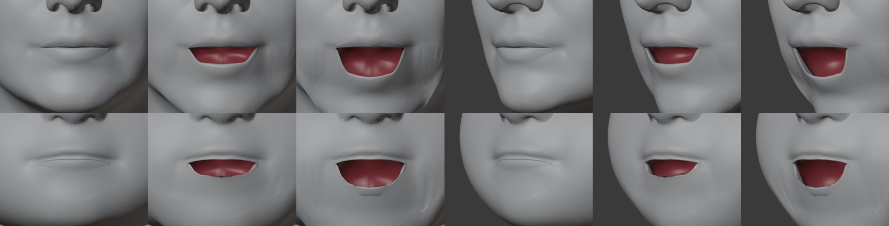<figcaption><b>그림 24.</b> 새 입 안쪽(회색 미리보기, 이·혀 없이). 위 f02, 아래 f11. 왼쪽 3칸은 정면 다문 입·턱 8°·16°, 오른쪽 3칸은 3/4입니다. 입술 안쪽 두께(회색 띠)와 입속(빨강)이 보입니다. f11 16°에서 아랫입술 밑 턱 단차는 미리보기용 간이 턱 변형 탓이고, 실제 리그에서는 생기지 않습니다.</figcaption></figure>
<figure>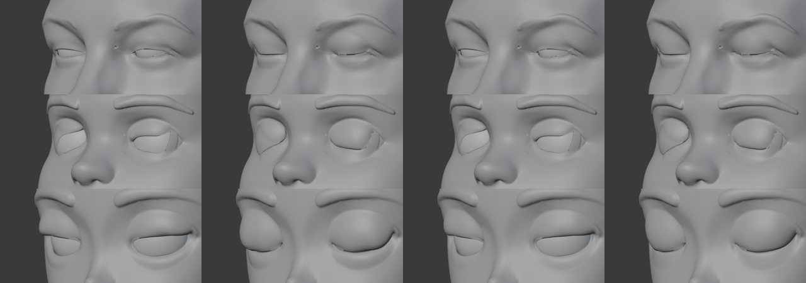<figcaption><b>그림 25.</b> 눈 감기 안구 붙이기(3/4, 위에서부터 f02·f11·f09). 왼쪽 2칸은 예전(반쯤·감은 눈), 오른쪽 2칸은 고친 뒤입니다. 감은 눈꺼풀의 부푼 모양이 줄어듭니다.</figcaption></figure>
<h2>4f. 겹침생성 + 대칭 결과 (4개 스타일 전체 체인)</h2>
<p>아래 수치와 그림은 턱관절 수정(4g) 뒤의 최종판입니다. 체인(<code>chain_sym2.sh</code> → <code>tex_sym2.sh</code>): 대칭 바탕 → 입(안쪽 말림·입속) → 눈 → 이·혀 → 대칭 고정(점) → Rigify 자동 무게 → 입 안쪽 무게 → 대칭 고정(무게) → 표정 42개 굽기 → 눈 감기 2개 → 대칭 고정(표정) → 4방향 3K 그림 텍스처 → 눈꺼풀 색 → 렌더.</p>
<figure>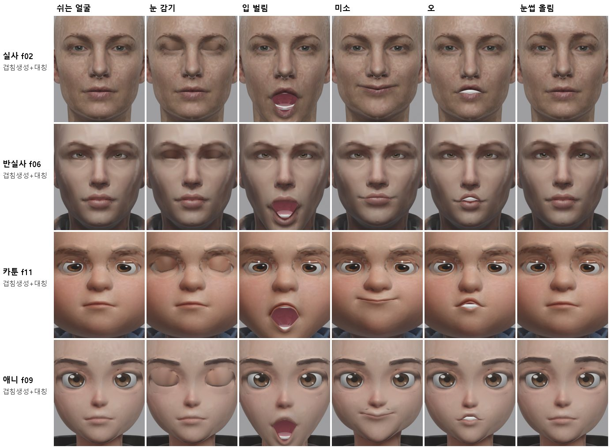<figcaption><b>그림 26.</b> 겹침생성 + 대칭 머리 4개(텍스처). 왼쪽부터 쉬는 얼굴·눈 감기·입 벌림(jawOpen)·미소·오(mouthFunnel)·눈썹 올림입니다. 4개 모두 입을 벌리면 입술 안쪽·입속·이·혀가 보이고, 감은 눈꺼풀은 피부색입니다.</figcaption></figure>
<div class="tbl"><table>
<tr><th>머리</th><th>무게 없는 점</th><th>입 벌림 입술 틈</th><th>대칭 고정 전 표정 좌우 차이</th><th>고정 후</th><th>무게 대칭 보정 최대</th><th>뒤집힌 면(42개 표정 합)</th></tr>
<tr><td>실사 f02</td><td>0</td><td>40.9mm</td><td>10.5%</td><td>0%</td><td>0.10</td><td>38 (jawOpen 16)</td></tr>
<tr><td>반실사 f06</td><td>0</td><td>33.4mm</td><td>47.5%</td><td>0%</td><td>0.06</td><td>20 (mouthClose 8)</td></tr>
<tr><td>카툰 f11</td><td>0</td><td>43.9mm</td><td>15.8%</td><td>0%</td><td>0.13</td><td>97 (jawOpen 77)</td></tr>
<tr><td>애니 f09</td><td>0</td><td>39.9mm</td><td>15.7%</td><td>0%</td><td>0.11</td><td>32 (browDownRight 7)</td></tr>
</table></div>
<p>"표정 좌우 차이"는 왼쪽 표정을 거울에 비춘 것과 오른쪽 표정의 차이(95% 값, 가장 크게 움직인 양 대비)입니다. 대칭 바탕이어도 표정 템플릿(MPFB)을 원본 머리에 맞춘 것이라 10~47% 어긋났고, 대칭 고정 뒤 0%가 됩니다. f11 jawOpen의 뒤집힌 면은 턱 밑(턱끝보다 약 6mm 아래, 목 쪽 가운데)에서 입을 벌릴 때 피부가 접히며 생깁니다. 입 부품이 아니라 원래 피부이고, 정면에서는 보이지 않습니다.</p>
<p><b>찾아 고친 오류 5</b>: f09는 턱 방향을 고친 뒤에도 입술 틈이 3mm만 벌어졌습니다. 표정 템플릿의 움직임을 이 머리의 조절점으로 옮길 때 각 조절점을 템플릿의 가장 가까운 점에 붙이는데, 다문 입에서는 아랫입술 조절점이 템플릿 윗입술에 붙을 수 있습니다. 이제 템플릿의 jawOpen에서 많이 내려가는 면(아랫입술)과 거의 안 움직이는 면(윗입술)을 나누어, 아랫입술 조절점은 아랫입술 면에만, 윗입술 조절점은 윗입술 면에만 붙입니다. f09 입술 틈은 3mm에서 39.7mm가 됐고, 나머지 셋은 거의 그대로입니다(f02 40.8, f06 34.6→33.0, f11 43.6→43.4mm).</p>
<figure>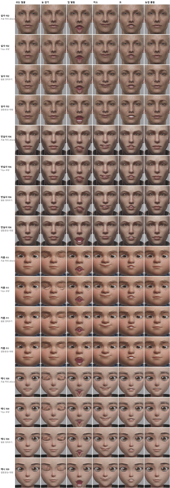<figcaption><b>그림 27.</b> 방식 비교. 스타일마다 위에서부터 지운 머리+Blender 부품, Tripo 모양 부품, 원본 덧씌우기(겹침생성, 대칭 전), 겹침생성+대칭입니다. 겹침생성+대칭이 원본 얼굴(코·볼·눈썹)을 그대로 가지면서 좌우가 같고, 입 안쪽이 가장 완전합니다.</figcaption></figure>
<h2>4g. 리그 안쪽: 뼈·뼈 무게·단면</h2>
<p>사용자 요청(2026-10-12): 결과 얼굴만이 아니라 안쪽 리깅과 뼈 상태도 보여 줄 것. 이를 위해 그림 도구 3개를 새로 만들었습니다. 각 도구는 만든 에이전트와 다른 에이전트가 f11에서 다시 돌려 반박을 시도했고, 나온 문제(작아서 안 보이는 혀 뼈, 머리 너머 반대쪽 귀가 비쳐 보임, 반대쪽 안구가 단면에 비쳐 보임, 눈꺼풀 파고듦을 못 잡는 검사 등)를 고친 뒤 썼습니다.</p>
<ul>
<li><code>rig_viz_bones.py</code>: 변형 뼈 94개를 부위별 색 막대로 머리 위에 겹쳐 그립니다(앞에 있는 것처럼 항상 보이게, 머리 뒤에 가려진 반대쪽 뼈는 숨김). 입·눈 가까이 그림과, 턱 조절 뼈를 15° 돌린 자세도 그립니다.</li>
<li><code>rig_viz_weights.py</code>: 부위별 뼈 무게 열지도, 점마다 가장 센 뼈의 부위 지도(무게 없는 점은 자홍색), 입 안쪽 턱 무게 단면.</li>
<li><code>rig_viz_section.py</code>: 머리를 가운데(x = 0)에서 잘라 입술·입술 안쪽 말림·입속·이·혀를 옆에서 봅니다. 눈은 왼쪽 안구 중심에서 자릅니다. 다문 입·입 벌림·오와 뜬 눈·감은 눈.</li>
</ul>
<figure>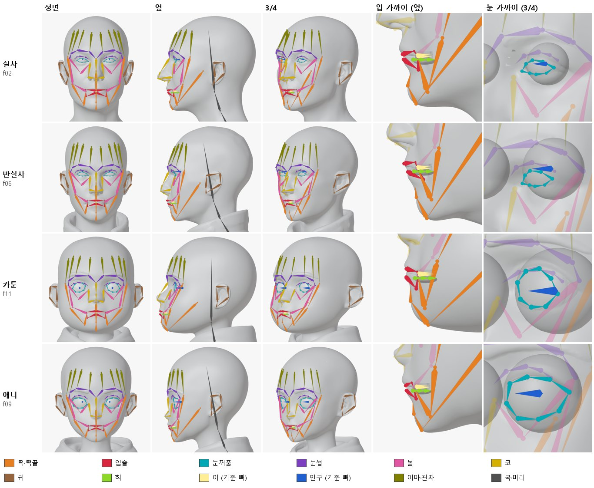<figcaption><b>그림 28.</b> 변형 뼈 94개(아래 색 범례). 이·안구는 변형 뼈가 아니라 기준 뼈입니다(아래 이는 턱뼈, 위 이는 머리뼈를 따르고, 안구 메쉬는 리그에 묶여 있지 않음). 입 가까이 그림에서 혀 뼈 3개(연두)와 이 기준 뼈(노랑)가 입속에 있고, 눈 가까이 그림에서 눈꺼풀 뼈 8개 고리(청록)가 안구를 둘러쌉니다. 좌우 짝 38쌍의 위치 차이는 0.000mm입니다.</figcaption></figure>
<figure>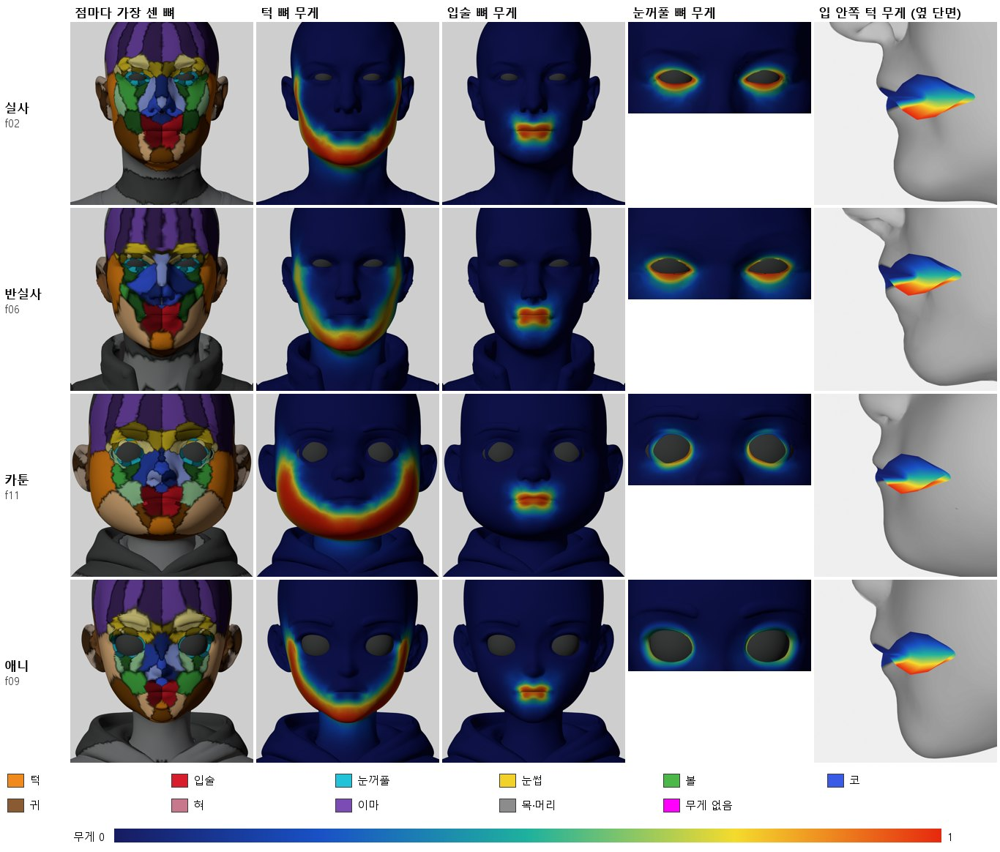<figcaption><b>그림 29.</b> 뼈 무게. 첫 칸은 점마다 가장 센 뼈의 부위(범례), 나머지는 부위 뼈 무게의 합(아래 색 띠, 파랑 0 → 빨강 1)입니다. 4개 모두 무게 없는 점 0개, 좌우 무게 차이 0입니다. 마지막 칸(입 안쪽, 옆 단면)은 입속 아래쪽이 턱을 따르고(빨강) 위쪽은 머리를 따르는(파랑) 규칙 무게입니다. 눈꺼풀 뼈 무게는 f09에서 약합니다. 눈 감기는 눈꺼풀 뼈가 아니라 고리 모양 키로 만들기 때문에 영향은 다른 눈 표정(가늘게 뜨기 등)에만 있습니다.</figcaption></figure>
<figure>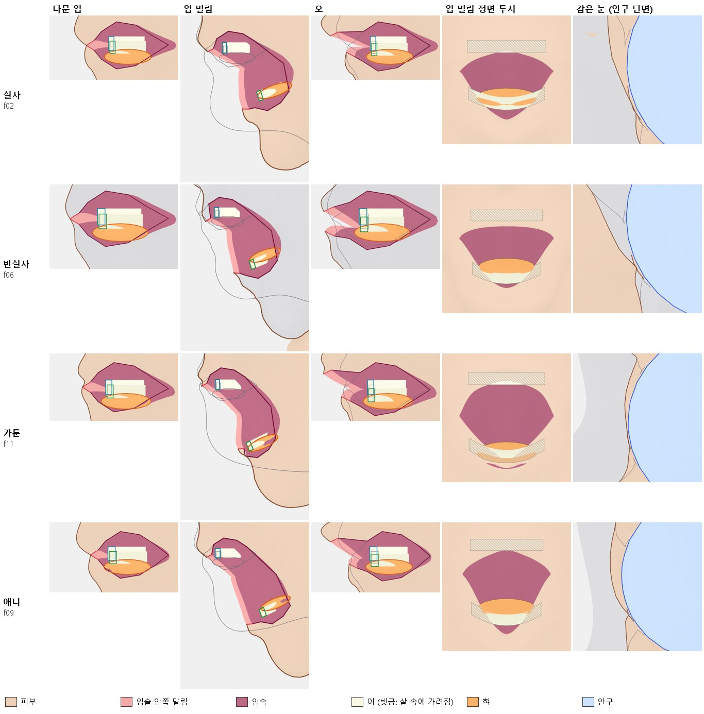<figcaption><b>그림 30.</b> 단면(아래 색 범례). 다문 입에서 위·아래 이는 입속 안에 있고 혀는 입속 바닥에 놓입니다. 입을 벌리면 입술 안쪽 말림(연분홍)이 입술 두께를 만들고, 입속(진분홍)이 턱을 따라 열립니다. 정면 투시에서 빗금 친 이는 입술 살 뒤에 가려진 부분입니다. 감은 눈 단면에서 눈꺼풀은 안구(하늘색) 표면을 따라 덮습니다.</figcaption></figure>
<h3>4g-1. 안쪽을 보고 찾은 문제: 턱 회전축</h3>
<p>단면과 뼈 자세 그림에서 입을 벌릴 때 아래 이와 혀가 입속 뒤로 말려 들어가는 것이 보였습니다. 턱 조절 뼈를 15° 돌리면 아랫입술이 아래보다 뒤로 더 많이 움직였습니다(f02: 뒤로 25.7mm, 아래로 11.5mm).</p>
<ul>
<li><b>원인</b>: Rigify 얼굴 리그는 턱 조절 뼈(<code>jaw_master</code>)를 턱선 뼈(jaw.L/R)의 시작점, 즉 눈 높이, 턱관절보다 3~4cm 앞에 둡니다. 실제 턱뼈(<code>DEF-jaw</code>)는 리깅 점이 정한 턱관절(귀 앞 깊은 곳, 눈보다 3~5cm 아래)에서 시작합니다. 표정 굽기도 조절 뼈 시작점을 축으로 턱을 돌렸습니다.</li>
<li><b>고침</b>: 리그를 만든 직후 턱 조절 뼈와 그 보조 뼈(입술이 턱을 일부 따르게 하는 MCH 뼈 5개)의 시작점을 턱관절로 옮깁니다(49~60mm 이동). 표정 굽기도 턱관절을 축으로 돌립니다. 쉬는 얼굴은 바뀌지 않습니다(차이 0.0015mm 이하).</li>
</ul>
<div class="tbl"><table>
<tr><th>머리</th><th>회전축 (고치기 전 → 뒤, mm)</th><th>턱 15° 때 아랫입술 이동 뒤/아래 (전)</th><th>(뒤)</th><th>입 벌림 이 사이 (전 → 뒤)</th></tr>
<tr><td>실사 f02</td><td>(0, −56.0, 462.3) → (0, −22.6, 426.1)</td><td>25.7 / 11.5</td><td>17.5 / 21.4</td><td>19.3 → 22.9mm</td></tr>
<tr><td>반실사 f06</td><td>(0, −55.6, 1587.6) → (0, −15.7, 1554.5)</td><td>22.6 / 8.3</td><td>15.1 / 19.9</td><td>20.2 → 24.0mm</td></tr>
<tr><td>카툰 f11</td><td>(0, −66.5, 539.4) → (0, −29.7, 491.7)</td><td>21.4 / 12.7</td><td>10.2 / 23.8</td><td>27.2 → 31.5mm</td></tr>
<tr><td>애니 f09</td><td>(0, −70.2, 924.0) → (0, −27.6, 892.5)</td><td>22.7 / 6.8</td><td>16.1 / 18.8</td><td>21.8 → 25.4mm</td></tr>
</table></div>
<figure>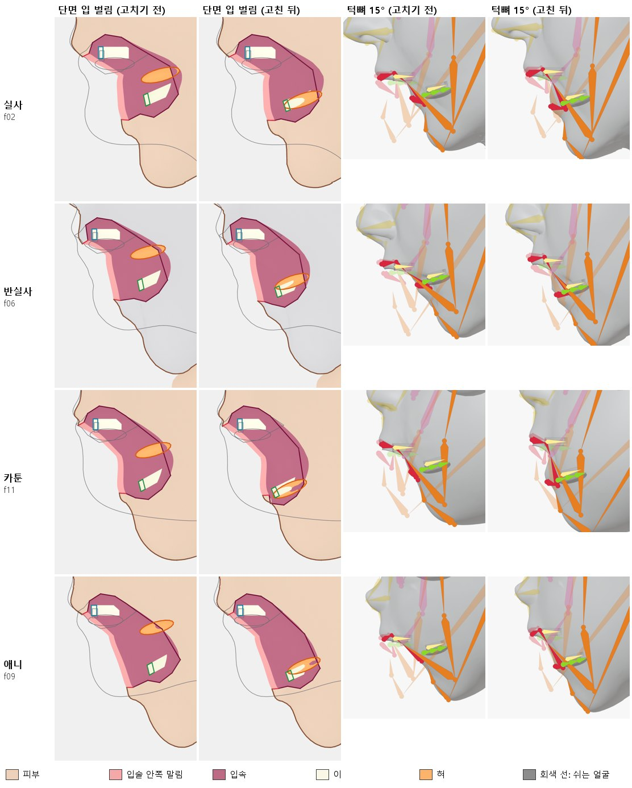<figcaption><b>그림 31.</b> 턱 회전축 고치기 전후. 왼쪽 2칸은 입 벌림(jawOpen) 단면, 오른쪽 2칸은 턱 조절 뼈를 15° 돌린 자세(흐린 뼈 = 쉬는 자세)입니다. 고치기 전에는 혀(주황)가 입속 위쪽 뒤에 떠 있고 아래 이가 뒤로 기울었습니다. 고친 뒤에는 혀와 아래 이가 함께 입 바닥으로 내려갑니다.</figcaption></figure>
<h3>4g-2. 리그 점검표 (최종판)</h3>
<div class="tbl"><table>
<tr><th>항목</th><th>f02</th><th>f06</th><th>f11</th><th>f09</th></tr>
<tr><td>변형 뼈 / 좌우 짝 / 짝 위치 차이</td><td colspan="4">94개 / 38쌍 / 0.000mm (4개 같음)</td></tr>
<tr><td>무게 없는 점 / 좌우 무게 차이</td><td colspan="4">0 / 0 (4개 같음)</td></tr>
<tr><td>입속 턱 무게 아래 / 위 평균</td><td colspan="4">0.89 / 0.11 (규칙 무게, 4개 같음)</td></tr>
<tr><td>입 벌림 입술 틈</td><td>41.1mm</td><td>33.5mm</td><td>44.0mm</td><td>40.1mm</td></tr>
<tr><td>이·혀가 피부 밖으로 나온 점 (3가지 입)</td><td>0</td><td>0</td><td>0</td><td>0</td></tr>
<tr><td>감은 눈: 윗눈꺼풀과 안구 최소 거리</td><td>−0.19mm (18점 파고듦)</td><td>+0.29mm</td><td>+0.31mm</td><td>+0.31mm</td></tr>
<tr><td>혀 뼈 무게가 묻은 얼굴 점 (가장 센 뼈인 점)</td><td>496 (0)</td><td>507 (0)</td><td>611 (0)</td><td>647 (0)</td></tr>
</table></div>
<p><b>남은 문제</b></p>
<ul>
<li>f02 감은 눈: 윗눈꺼풀 안쪽 접힘 고리(12·13번) 18점이 안구 속으로 최대 0.19mm 들어갑니다. 겉에서는 보이지 않지만, 눈 감기 키의 안구 붙이기 여유를 접힘 고리에도 적용해야 합니다.</li>
<li>혀 뼈 무게가 입술 둘레 피부 약 500~650점에 약하게 묻어 있습니다. 혀를 움직이는 표정(tongueOut)에서 입술 둘레가 조금 끌릴 수 있습니다. 입 안쪽 무게 단계에서 피부의 혀 무게를 지우면 됩니다.</li>
<li>안구 메쉬는 리그에 묶여 있지 않습니다(눈 굴리기 키가 아직 없음).</li>
</ul>

<h2>5. 테스트 진행표</h2>
<div class="tbl"><table>
<tr><th>#</th><th>단계</th><th>결과</th><th>상태</th></tr>
<tr><td>M1-1</td><td>눈·입 지운 그림 4장</td><td>무료 편집. 한 장은 참고 그림 없이 돌아 엉뚱한 사진이 나와 다시 함</td><td><span class="chip ok">완료</span></td></tr>
<tr><td>M1-2</td><td>지운 머리 3D 4개 + Tripo 부품 8개</td><td>12 × 15 = 180크레딧</td><td><span class="chip ok">완료</span></td></tr>
<tr><td>M1-3</td><td>원본에 정렬</td><td>표면 차이 중앙값 0.8~1.8mm</td><td><span class="chip ok">완료</span></td></tr>
<tr><td>M1-4</td><td>Blender 입 부품</td><td>다문 입 매끈, 벌리면 테두리 찢어짐</td><td><span class="chip part">일부</span></td></tr>
<tr><td>M1-5</td><td>Blender 눈 부품</td><td>1판 실패 → 2판(광선 좌표·각도별 구멍·지퍼 잇기·깊이 다듬기) 성공</td><td><span class="chip ok">완료</span></td></tr>
<tr><td>M1-6</td><td>4개 스타일 뜬 눈·반·감은 눈 렌더</td><td>orig·proc 두 모양 모두, 그림 11·12</td><td><span class="chip ok">완료</span></td></tr>
<tr><td>M1-4b</td><td>입 부품에 2판 함수 적용</td><td>4개 스타일 모두 다문 입 깨끗, 벌려도 테두리 찢어짐 없음 (그림 14)</td><td><span class="chip ok">완료</span></td></tr>
<tr><td>MV-1~3</td><td>고해상도 멀티뷰·결합부 참조</td><td>76장, 98MB (그림 15·16)</td><td><span class="chip ok">완료</span></td></tr>
<tr><td>M1-7</td><td>Tripo 부품 모양에 고리 구조 씌우기</td><td>입 4개 자동 배치. 눈은 부품 나눔 재생성(180크레딧) 후 f02·f06·f11 성공, f09 실패(흰자 조각남)</td><td><span class="chip part">일부</span></td></tr>
<tr><td>M1-8</td><td>이·혀, Rigify + 표정 42개, 텍스처</td><td>지운 머리+Blender, Tripo, 겹침생성, 겹침생성+대칭 4가지 × 4개 스타일 (그림 26·27)</td><td><span class="chip ok">완료</span></td></tr>
<tr><td>M1-9</td><td>Blender 부품 vs Tripo 부품 비교</td><td>그림 19·20·27. 겹침생성+대칭을 기본 방식으로 정함</td><td><span class="chip ok">완료</span></td></tr>
<tr><td>M1-10</td><td>좌우 완전 대칭화</td><td>바탕·부품·무게·표정 모두 좌우 차이 0. 면 방향·찌꺼기 면·대칭 무게 실패 3가지 오류 고침 (4d)</td><td><span class="chip ok">완료</span></td></tr>
<tr><td>M1-11</td><td>입 안쪽·눈꺼풀 고침</td><td>입술 안쪽 말림 + 입속 + 규칙 무게, 눈 감기 안구 붙이기, 눈꺼풀 색 (4e)</td><td><span class="chip ok">완료</span></td></tr>
<tr><td>M1-12</td><td>리그 안쪽 보기 + 턱 회전축</td><td>뼈·무게·단면 도구 3개, 턱관절 축 수정, 입술 조절점 붙이기 수정 (4f·4g)</td><td><span class="chip ok">완료</span></td></tr>
<tr><td>M1-13</td><td>남은 문제</td><td>f02 눈꺼풀 접힘 0.19mm 파고듦, 피부의 혀 무게, 안구 리그 연결, f09 Tripo 눈 실패</td><td><span class="chip todo">다음</span></td></tr>
</table></div>

<h2>6. 사용자 지적 반영</h2>
<h3>6-1. 정면 그림 1장, 낮은 해상도</h3>
<p>지금 쓰는 그림은 원본 정면 1장과 지운 정면 1장(1024px), 부품 그림(부품이 300px 정도)입니다. 그래서 Blender에서 할 수 있는 일이 줄어듭니다.</p>
<ul>
<li>눈꺼풀·입술의 옆모습(두께, 앞으로 나온 정도)을 그림으로 확인할 수 없어 깊이를 원본 3D 표면에만 의존합니다.</li>
<li>색 입히기가 정면 1장이라 옆·아래에서 보이는 곳은 주변 색으로 채웁니다.</li>
<li>부품 그림이 작아 Tripo 부품 모양이 뭉툭합니다.</li>
</ul>
<p>사용자 결론(2026-10-12): <b>Tripo든 Blender든 필요한 것은 고해상도 멀티뷰</b>입니다. 계획은 아래와 같습니다.</p>
<div class="tbl"><table>
<tr><th>단계</th><th>내용</th><th>비용</th></tr>
<tr><td>MV-1</td><td>원본·지운 머리 정면 그림을 Tripo Studio 이미지 편집(Nano Banana Pro, "그대로 다시 그리기")으로 4K로 만듦</td><td>무료로 보이나 4K 옵션 가격 확인 필요</td></tr>
<tr><td>MV-2</td><td>4K 정면에서 Multiview Image로 정면·좌·우·뒤 4장</td><td>지금까지 무료</td></tr>
<tr><td>MV-3</td><td>눈·입 부품도 4K 확대 정면 + 옆모습</td><td>무료로 보임</td></tr>
<tr><td>MV-4</td><td>Blender: 4방향 그림을 카메라에 맞춰 여러 방향 색 투영, 옆모습 윤곽으로 입술·눈꺼풀 깊이 확인, 4방향 기준점</td><td>0</td></tr>
<tr><td>MV-5</td><td>Tripo: 같은 4장으로 Multi-View to 3D (HD H3.1, 부품 끔) → 그림과 3D가 정확히 맞는 머리</td><td>머리당 15 (질감 켜면 30), 승인 필요</td></tr>
</table></div>
<h3>6-1b. 만든 결과 (MV-1~3, 크레딧 0)</h3>
<p>Tripo Studio 이미지 도구(Nano Banana Pro)는 4K 옵션을 켜도 0크레딧이었습니다(정가 30, 하루 무료 1000회 중 89회 사용).</p>
<ol>
<li><b>4K 정면 8장</b>: 원본·지운 머리 정면을 "그대로 다시 그리기"로 4096×4096으로 만들었습니다.</li>
<li><b>멀티뷰</b>: Multiview Image는 무료지만 결과가 <b>1024px</b>뿐이었습니다. 그래서 좌·우·뒤 그림을 하나씩 다시 4K로 그렸습니다(원본 3방향, 지운 머리 2방향, 20장). 원본 1K 32장도 보관합니다.</li>
<li><b>결합부 확대 16장</b>: 스타일마다 4장입니다.
  <ul>
  <li>눈 정면(16:9): 눈꺼풀 주름, 속눈썹선, 눈꼬리, 눈꺼풀 두께</li>
  <li>눈 3/4: 눈꺼풀이 안구 위로 나온 정도</li>
  <li>입 정면(4:3): 입술 경계, 인중, 입꼬리</li>
  <li>입 옆모습: 입술 돌출과 두께</li>
  </ul></li>
<li>내려받은 76장은 JPG(품질 92)로 바꿔 98MB입니다(받을 때 285MB).</li>
</ol>
<p><b>문제</b>: Tripo 서버에 저장된 4K 3장이 정확히 4MiB에서 잘려 있었습니다(아래가 회색). 다시 생성해서 바꿨습니다. 한 장(f11 눈 정면)은 참조 그림이 붙기 전에 생성돼 다른 얼굴이 나와서 다시 만들었습니다.</p>
<figure>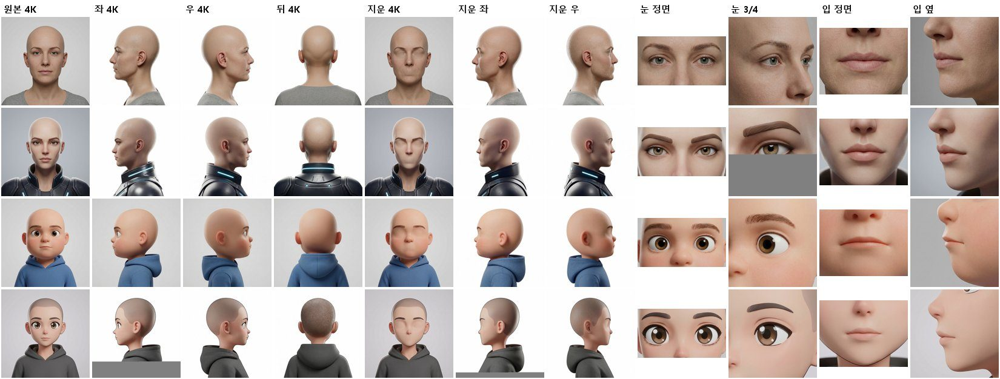<figcaption><b>그림 15.</b> 받은 참조 그림. 줄마다 한 스타일(실사·반실사·카툰·애니)입니다. 왼쪽부터 원본 4K 정면·좌·우·뒤, 지운 머리 4K 정면·좌·우, 결합부 확대(눈 정면·눈 3/4·입 정면·입 옆)입니다.</figcaption></figure>
<figure>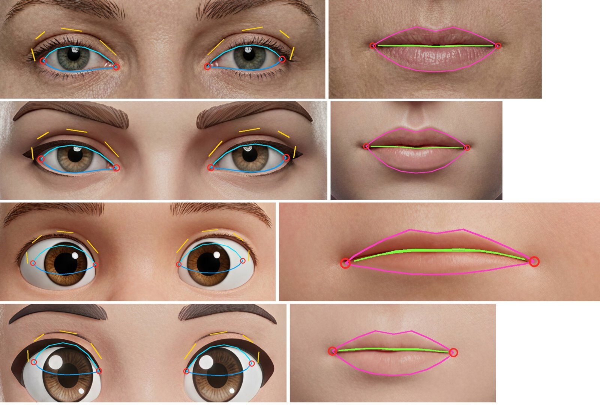<figcaption><b>그림 16.</b> 결합부 강조선. 4K 원본 정면에 MediaPipe로 찾은 선을 겹쳤습니다.
<ul>
<li>파랑: 위·아래 눈꺼풀 가장자리</li>
<li>노랑 점선: 눈꺼풀 바깥 고리(주름·눈구멍 안내선)</li>
<li>빨강 원: 눈꼬리·입꼬리</li>
<li>분홍: 바깥 입술선</li>
<li>연두: 입술이 맞닿는 선</li>
</ul>
실사·반실사는 눈꺼풀선이 실제와 잘 맞습니다. 카툰·애니는 큰 눈 안에 사람 크기 눈을 그려서 틀립니다. 그래서 이 두 스타일은 3D 깊이 테두리(T14)를 계속 씁니다. 그림에서 흰자 영역을 직접 잘라내는 방법(GrabCut, 색 분류)도 시험했지만 카툰 흰자와 실사 피부를 안정적으로 나누지 못했습니다.</figcaption></figure>
<p><b>다음(MV-4)</b>: 4방향 4K 그림을 3D 머리에 맞춰 여러 방향 색 투영에 쓰고, 옆모습 윤곽으로 입술·눈꺼풀 깊이를 확인합니다.</p>

<h3>6-2. 부품을 얼굴에 붙이는 도구 조사 결과</h3>
<p>경계 고리 두 개를 바로 꿰매는 완성 도구는 2개뿐이고, 둘 다 유료이거나 상업 이용에 라이선스가 필요합니다.</p>
<ul>
<li><b>MeshLib stitchHoles</b>: Python으로 쓸 수 있고, 비상업 무료·상업 유료입니다.</li>
<li><b>Houdini PolyBridge</b>: Indie가 연 $299입니다.</li>
</ul>
<p>나머지는 머리 전체를 다시 만들거나(규칙 위반) 손으로 하는 도구입니다. 그래서 2판은 1순위 추천대로 Blender bmesh에서 직접 짰습니다. 2D로 펴기, 원래 면만 자르기, 각도순 지퍼 잇기입니다.</p>
<div class="tbl"><table>
<tr><th>도구</th><th>우리에게 쓸모</th><th>머리 보존</th><th>자동화</th><th>비용</th></tr>
<tr><td>Blender bridge_loops / Grid Fill</td><td>점 수가 다르면 비틀림, Grid Fill은 막기용</td><td class="good">O</td><td class="good">O</td><td>무료</td></tr>
<tr><td>Boolean (Exact)</td><td>삼각형 덩어리에서 가는 조각면</td><td>절단선 추가</td><td class="good">O</td><td>무료</td></tr>
<tr><td>Shrinkwrap · Data Transfer · Geometry Nodes</td><td>부품만 표면에 붙이기, 이음새 노멀 옮기기</td><td class="good">O</td><td class="good">O</td><td>무료</td></tr>
<tr><td>LoopTools</td><td>고리 간격 고르기(부품 쪽만)</td><td>주의</td><td>편집 모드 연산자</td><td>무료</td></tr>
<tr><td>MESHmachine Plug, Conform Object</td><td>부품 끼우기·표면 맞춤 (하드서피스용)</td><td>대체로 O</td><td>미확인</td><td>$15~40</td></tr>
<tr><td>Retopoflow 4, PolyQuilt</td><td>손 리토폴로지</td><td class="good">O</td><td class="bad">X</td><td>무료~$86</td></tr>
<tr><td>QRemeshify, Quad Remesher, ZRemesher, DynaMesh, Wrap</td><td>머리 전체를 다시 만듦</td><td class="bad">X</td><td>-</td><td>-</td></tr>
<tr><td><b>Houdini PolyBridge</b></td><td>점 수가 달라도 자동 삼각형 보정, 비틀림·짝짓기 옵션</td><td class="good">O</td><td>hython</td><td>$299/년</td></tr>
<tr><td><b>MeshLib stitchHoles</b></td><td>두 구멍 경계를 바로 봉합 (우리 문제와 정확히 일치)</td><td class="good">O</td><td>Python</td><td>상업 유료</td></tr>
<tr><td>PyMeshLab</td><td>새 띠만 다시 고르게 나누기, 경계·비매니폴드 검사</td><td class="good">O</td><td>pip</td><td>GPL</td></tr>
<tr><td>libigl</td><td>경계 고정 매끈하게(바이하모닉), 국소 펴기</td><td class="good">O</td><td>pip</td><td>MPL-2.0</td></tr>
</table></div>
<p>쓸 수 있는 무료 부품: MakeHuman 눈·이(CC0), Blender Human Base Meshes(CC0). 혀는 확인되지 않았습니다.</p>

<h2>7. 파일</h2>
<ul>
<li><code>tools/face_auto/organ_lib.py</code>: 타원 구멍, 고리 잇기 (커밋 전)</li>
<li><code>tools/face_auto/organ_mouth.py</code>, <code>organ_eye.py</code>: 입·눈 부품 (커밋 전)</li>
<li>임시 폴더 <code>m1/</code>: 지운 그림·3D, 정렬 blend, Tripo 부품, 미리보기 스크립트</li>
</ul>
</main>
